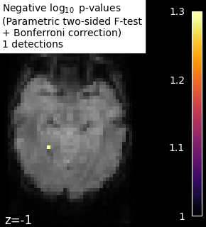

Note
Click here to download the full example code or to run this example in your browser via Binder
9.8.9. Massively univariate analysis of face vs house recognition¶
A permuted Ordinary Least Squares algorithm is run at each voxel in order to determine whether or not it behaves differently under a “face viewing” condition and a “house viewing” condition. We consider the mean image per session and per condition. Otherwise, the observations cannot be exchanged at random because a time dependence exists between observations within a same session (see [1] for more detailed explanations).
The example shows the small differences that exist between Bonferroni-corrected p-values and family-wise corrected p-values obtained from a permutation test combined with a max-type procedure [2]. Bonferroni correction is a bit conservative, as revealed by the presence of a few false negative.
Note
If you are using Nilearn with a version older than 0.9.0,
then you should either upgrade your version or import maskers
from the input_data module instead of the maskers module.
That is, you should manually replace in the following example all occurrences of:
from nilearn.maskers import NiftiMasker
with:
from nilearn.input_data import NiftiMasker
9.8.9.1. References¶
- [1] Winkler, A. M. et al. (2014).
Permutation inference for the general linear model. Neuroimage.
- [2] Anderson, M. J. & Robinson, J. (2001).
Permutation tests for linear models. Australian & New Zealand Journal of Statistics, 43(1), 75-88. (http://avesbiodiv.mncn.csic.es/estadistica/permut2.pdf)
# Author: Virgile Fritsch, <virgile.fritsch@inria.fr>, Feb. 2014
Load Haxby dataset
from nilearn import datasets, image
haxby_dataset = datasets.fetch_haxby(subjects=[2])
# print basic information on the dataset
print('Mask nifti image (3D) is located at: %s' % haxby_dataset.mask)
print('Functional nifti image (4D) is located at: %s' % haxby_dataset.func[0])
Out:
Mask nifti image (3D) is located at: /home/circleci/nilearn_data/haxby2001/mask.nii.gz
Functional nifti image (4D) is located at: /home/circleci/nilearn_data/haxby2001/subj2/bold.nii.gz
Restrict to faces and houses
import numpy as np
import pandas as pd
labels = pd.read_csv(haxby_dataset.session_target[0], sep=" ")
conditions = labels['labels']
categories = conditions.unique()
conditions_encoded = np.zeros_like(conditions)
for c, category in enumerate(categories):
conditions_encoded[conditions == category] = c
sessions = labels['chunks']
condition_mask = conditions.isin(['face', 'house'])
conditions_encoded = conditions_encoded[condition_mask]
Mask data
mask_filename = haxby_dataset.mask
from nilearn.image import index_img
from nilearn.maskers import NiftiMasker
nifti_masker = NiftiMasker(
smoothing_fwhm=8,
mask_img=mask_filename,
memory='nilearn_cache', memory_level=1) # cache options
func_filename = haxby_dataset.func[0]
func_reduced = index_img(func_filename,
condition_mask)
fmri_masked = nifti_masker.fit_transform(func_reduced)
# We consider the mean image per session and per condition.
# Otherwise, the observations cannot be exchanged at random because
# a time dependence exists between observations within a same session.
n_sessions = np.unique(sessions).size
grouped_fmri_masked = np.empty((2 * n_sessions, # two conditions per session
fmri_masked.shape[1]))
grouped_conditions_encoded = np.empty((2 * n_sessions, 1))
for s in range(n_sessions):
session_mask = sessions[condition_mask] == s
session_house_mask = np.logical_and(session_mask,
conditions[condition_mask] == 'house')
session_face_mask = np.logical_and(session_mask,
conditions[condition_mask] == 'face')
grouped_fmri_masked[2 * s] = fmri_masked[session_house_mask].mean(0)
grouped_fmri_masked[2 * s + 1] = fmri_masked[session_face_mask].mean(0)
grouped_conditions_encoded[2 * s] = conditions_encoded[
session_house_mask][0]
grouped_conditions_encoded[2 * s + 1] = conditions_encoded[
session_face_mask][0]
Perform massively univariate analysis with permuted OLS
We use a two-sided t-test to compute p-values, but we keep trace of the effect sign to add it back at the end and thus observe the signed effect
from nilearn.mass_univariate import permuted_ols
neg_log_pvals, t_scores_original_data, _ = permuted_ols(
grouped_conditions_encoded, grouped_fmri_masked,
# + intercept as a covariate by default
n_perm=10000, two_sided_test=True,
verbose=1, # display progress bar
n_jobs=1) # can be changed to use more CPUs
signed_neg_log_pvals = neg_log_pvals * np.sign(t_scores_original_data)
signed_neg_log_pvals_unmasked = nifti_masker.inverse_transform(
signed_neg_log_pvals)
Out:
[Parallel(n_jobs=1)]: Using backend SequentialBackend with 1 concurrent workers.
Job #1, processed 0/10000 permutations (0.00%, 23.136138916015625 seconds remaining)
Job #1, processed 10/10000 permutations (0.10%, 14.424428701400757 seconds remaining)
Job #1, processed 20/10000 permutations (0.20%, 13.036709070205687 seconds remaining)
Job #1, processed 30/10000 permutations (0.30%, 12.473640362421673 seconds remaining)
Job #1, processed 40/10000 permutations (0.40%, 12.182365179061888 seconds remaining)
Job #1, processed 50/10000 permutations (0.50%, 12.094612836837769 seconds remaining)
Job #1, processed 60/10000 permutations (0.60%, 11.96161723136902 seconds remaining)
Job #1, processed 70/10000 permutations (0.70%, 11.904076746531896 seconds remaining)
Job #1, processed 80/10000 permutations (0.80%, 11.80347728729248 seconds remaining)
Job #1, processed 90/10000 permutations (0.90%, 11.773973014619614 seconds remaining)
Job #1, processed 100/10000 permutations (1.00%, 11.716888904571533 seconds remaining)
Job #1, processed 110/10000 permutations (1.10%, 11.681654128161343 seconds remaining)
Job #1, processed 120/10000 permutations (1.20%, 11.631733973821003 seconds remaining)
Job #1, processed 130/10000 permutations (1.30%, 11.611080683194674 seconds remaining)
Job #1, processed 140/10000 permutations (1.40%, 11.589026076453074 seconds remaining)
Job #1, processed 150/10000 permutations (1.50%, 11.565278768539429 seconds remaining)
Job #1, processed 160/10000 permutations (1.60%, 11.536601901054382 seconds remaining)
Job #1, processed 170/10000 permutations (1.70%, 11.524094483431647 seconds remaining)
Job #1, processed 180/10000 permutations (1.80%, 11.487027221255833 seconds remaining)
Job #1, processed 190/10000 permutations (1.90%, 11.476570204684608 seconds remaining)
Job #1, processed 200/10000 permutations (2.00%, 11.451617240905762 seconds remaining)
Job #1, processed 210/10000 permutations (2.10%, 11.434810195650373 seconds remaining)
Job #1, processed 220/10000 permutations (2.20%, 11.413931868293066 seconds remaining)
Job #1, processed 230/10000 permutations (2.30%, 11.41579764822255 seconds remaining)
Job #1, processed 240/10000 permutations (2.40%, 11.392638047536213 seconds remaining)
Job #1, processed 250/10000 permutations (2.50%, 11.377876281738281 seconds remaining)
Job #1, processed 260/10000 permutations (2.60%, 11.355301985373863 seconds remaining)
Job #1, processed 270/10000 permutations (2.70%, 11.347183757358126 seconds remaining)
Job #1, processed 280/10000 permutations (2.80%, 11.3243134362357 seconds remaining)
Job #1, processed 290/10000 permutations (2.90%, 11.323608620413417 seconds remaining)
Job #1, processed 300/10000 permutations (3.00%, 11.321851650873821 seconds remaining)
Job #1, processed 310/10000 permutations (3.10%, 11.30612572546928 seconds remaining)
Job #1, processed 320/10000 permutations (3.20%, 11.296546399593351 seconds remaining)
Job #1, processed 330/10000 permutations (3.30%, 11.277893738313155 seconds remaining)
Job #1, processed 340/10000 permutations (3.40%, 11.266500697416417 seconds remaining)
Job #1, processed 350/10000 permutations (3.50%, 11.246546098164151 seconds remaining)
Job #1, processed 360/10000 permutations (3.60%, 11.229067140155369 seconds remaining)
Job #1, processed 370/10000 permutations (3.70%, 11.218970234329635 seconds remaining)
Job #1, processed 380/10000 permutations (3.80%, 11.214039639422769 seconds remaining)
Job #1, processed 390/10000 permutations (3.90%, 11.204550309058947 seconds remaining)
Job #1, processed 400/10000 permutations (4.00%, 11.20016098022461 seconds remaining)
Job #1, processed 410/10000 permutations (4.10%, 11.18724915457935 seconds remaining)
Job #1, processed 420/10000 permutations (4.20%, 11.169754913875034 seconds remaining)
Job #1, processed 430/10000 permutations (4.30%, 11.15966458098833 seconds remaining)
Job #1, processed 440/10000 permutations (4.40%, 11.139444979754359 seconds remaining)
Job #1, processed 450/10000 permutations (4.50%, 11.12944934103224 seconds remaining)
Job #1, processed 460/10000 permutations (4.60%, 11.112792087637862 seconds remaining)
Job #1, processed 470/10000 permutations (4.70%, 11.10200932685365 seconds remaining)
Job #1, processed 480/10000 permutations (4.80%, 11.087505102157595 seconds remaining)
Job #1, processed 490/10000 permutations (4.90%, 11.077037937787113 seconds remaining)
Job #1, processed 500/10000 permutations (5.00%, 11.060197353363037 seconds remaining)
Job #1, processed 510/10000 permutations (5.10%, 11.04731105823143 seconds remaining)
Job #1, processed 520/10000 permutations (5.20%, 11.032827835816603 seconds remaining)
Job #1, processed 530/10000 permutations (5.30%, 11.022756135688638 seconds remaining)
Job #1, processed 540/10000 permutations (5.40%, 11.004081743734853 seconds remaining)
Job #1, processed 550/10000 permutations (5.50%, 10.994964447888462 seconds remaining)
Job #1, processed 560/10000 permutations (5.60%, 10.980278151375908 seconds remaining)
Job #1, processed 570/10000 permutations (5.70%, 10.968044281005858 seconds remaining)
Job #1, processed 580/10000 permutations (5.80%, 10.952781101752972 seconds remaining)
Job #1, processed 590/10000 permutations (5.90%, 10.938469983763612 seconds remaining)
Job #1, processed 600/10000 permutations (6.00%, 10.923282782236734 seconds remaining)
Job #1, processed 610/10000 permutations (6.10%, 10.91131006303381 seconds remaining)
Job #1, processed 620/10000 permutations (6.20%, 10.897780379941386 seconds remaining)
Job #1, processed 630/10000 permutations (6.30%, 10.888272663903615 seconds remaining)
Job #1, processed 640/10000 permutations (6.40%, 10.871630162000654 seconds remaining)
Job #1, processed 650/10000 permutations (6.50%, 10.862629193526049 seconds remaining)
Job #1, processed 660/10000 permutations (6.60%, 10.850523789723715 seconds remaining)
Job #1, processed 670/10000 permutations (6.70%, 10.834639132912478 seconds remaining)
Job #1, processed 680/10000 permutations (6.80%, 10.823538990581739 seconds remaining)
Job #1, processed 690/10000 permutations (6.90%, 10.808794218560923 seconds remaining)
Job #1, processed 700/10000 permutations (7.00%, 10.79248891557966 seconds remaining)
Job #1, processed 710/10000 permutations (7.10%, 10.78569708071964 seconds remaining)
Job #1, processed 720/10000 permutations (7.20%, 10.772640016343857 seconds remaining)
Job #1, processed 730/10000 permutations (7.30%, 10.763376856503422 seconds remaining)
Job #1, processed 740/10000 permutations (7.40%, 10.747583157307393 seconds remaining)
Job #1, processed 750/10000 permutations (7.50%, 10.738825956980389 seconds remaining)
Job #1, processed 760/10000 permutations (7.60%, 10.725283158452887 seconds remaining)
Job #1, processed 770/10000 permutations (7.70%, 10.713480881282262 seconds remaining)
Job #1, processed 780/10000 permutations (7.80%, 10.69959288988358 seconds remaining)
Job #1, processed 790/10000 permutations (7.90%, 10.688880606542659 seconds remaining)
Job #1, processed 800/10000 permutations (8.00%, 10.673019647598267 seconds remaining)
Job #1, processed 810/10000 permutations (8.10%, 10.663662151054101 seconds remaining)
Job #1, processed 820/10000 permutations (8.20%, 10.651194299139627 seconds remaining)
Job #1, processed 830/10000 permutations (8.30%, 10.64223667512457 seconds remaining)
Job #1, processed 840/10000 permutations (8.40%, 10.629315728232973 seconds remaining)
Job #1, processed 850/10000 permutations (8.50%, 10.619007909999175 seconds remaining)
Job #1, processed 860/10000 permutations (8.60%, 10.606219408123993 seconds remaining)
Job #1, processed 870/10000 permutations (8.70%, 10.594641616974755 seconds remaining)
Job #1, processed 880/10000 permutations (8.80%, 10.582858085632324 seconds remaining)
Job #1, processed 890/10000 permutations (8.90%, 10.569812383544578 seconds remaining)
Job #1, processed 900/10000 permutations (9.00%, 10.554875718222723 seconds remaining)
Job #1, processed 910/10000 permutations (9.10%, 10.544668396750652 seconds remaining)
Job #1, processed 920/10000 permutations (9.20%, 10.534418385961782 seconds remaining)
Job #1, processed 930/10000 permutations (9.30%, 10.522997035775132 seconds remaining)
Job #1, processed 940/10000 permutations (9.40%, 10.510348943953819 seconds remaining)
Job #1, processed 950/10000 permutations (9.50%, 10.500539240084198 seconds remaining)
Job #1, processed 960/10000 permutations (9.60%, 10.487731496493023 seconds remaining)
Job #1, processed 970/10000 permutations (9.70%, 10.476074304777324 seconds remaining)
Job #1, processed 980/10000 permutations (9.80%, 10.462869108939657 seconds remaining)
Job #1, processed 990/10000 permutations (9.90%, 10.452310162361222 seconds remaining)
Job #1, processed 1000/10000 permutations (10.00%, 10.437528848648071 seconds remaining)
Job #1, processed 1010/10000 permutations (10.10%, 10.430151703334094 seconds remaining)
Job #1, processed 1020/10000 permutations (10.20%, 10.417837979746801 seconds remaining)
Job #1, processed 1030/10000 permutations (10.30%, 10.406278818556405 seconds remaining)
Job #1, processed 1040/10000 permutations (10.40%, 10.393461667574368 seconds remaining)
Job #1, processed 1050/10000 permutations (10.50%, 10.385470503852481 seconds remaining)
Job #1, processed 1060/10000 permutations (10.60%, 10.372364165647975 seconds remaining)
Job #1, processed 1070/10000 permutations (10.70%, 10.361818266806202 seconds remaining)
Job #1, processed 1080/10000 permutations (10.80%, 10.34909620108428 seconds remaining)
Job #1, processed 1090/10000 permutations (10.90%, 10.340636021500334 seconds remaining)
Job #1, processed 1100/10000 permutations (11.00%, 10.326212774623524 seconds remaining)
Job #1, processed 1110/10000 permutations (11.10%, 10.315085075997018 seconds remaining)
Job #1, processed 1120/10000 permutations (11.20%, 10.302265456744603 seconds remaining)
Job #1, processed 1130/10000 permutations (11.30%, 10.290484428405762 seconds remaining)
Job #1, processed 1140/10000 permutations (11.40%, 10.278438266954922 seconds remaining)
Job #1, processed 1150/10000 permutations (11.50%, 10.268285160479339 seconds remaining)
Job #1, processed 1160/10000 permutations (11.60%, 10.254769810314837 seconds remaining)
Job #1, processed 1170/10000 permutations (11.70%, 10.24420459046323 seconds remaining)
Job #1, processed 1180/10000 permutations (11.80%, 10.2312172590676 seconds remaining)
Job #1, processed 1190/10000 permutations (11.90%, 10.220723941546527 seconds remaining)
Job #1, processed 1200/10000 permutations (12.00%, 10.206529299418131 seconds remaining)
Job #1, processed 1210/10000 permutations (12.10%, 10.196193730535587 seconds remaining)
Job #1, processed 1220/10000 permutations (12.20%, 10.183619471847035 seconds remaining)
Job #1, processed 1230/10000 permutations (12.30%, 10.172224321985633 seconds remaining)
Job #1, processed 1240/10000 permutations (12.40%, 10.16122797996767 seconds remaining)
Job #1, processed 1250/10000 permutations (12.50%, 10.151193618774414 seconds remaining)
Job #1, processed 1260/10000 permutations (12.60%, 10.141706383417523 seconds remaining)
Job #1, processed 1270/10000 permutations (12.70%, 10.129329381026622 seconds remaining)
Job #1, processed 1280/10000 permutations (12.80%, 10.11695484817028 seconds remaining)
Job #1, processed 1290/10000 permutations (12.90%, 10.102696095326149 seconds remaining)
Job #1, processed 1300/10000 permutations (13.00%, 10.09214131648724 seconds remaining)
Job #1, processed 1310/10000 permutations (13.10%, 10.080236531395949 seconds remaining)
Job #1, processed 1320/10000 permutations (13.20%, 10.068714893225469 seconds remaining)
Job #1, processed 1330/10000 permutations (13.30%, 10.05763173999643 seconds remaining)
Job #1, processed 1340/10000 permutations (13.40%, 10.046866345761426 seconds remaining)
Job #1, processed 1350/10000 permutations (13.50%, 10.037116297969112 seconds remaining)
Job #1, processed 1360/10000 permutations (13.60%, 10.02403736114502 seconds remaining)
Job #1, processed 1370/10000 permutations (13.70%, 10.011660692465567 seconds remaining)
Job #1, processed 1380/10000 permutations (13.80%, 10.000775862431182 seconds remaining)
Job #1, processed 1390/10000 permutations (13.90%, 9.987036193875099 seconds remaining)
Job #1, processed 1400/10000 permutations (14.00%, 9.97628310748509 seconds remaining)
Job #1, processed 1410/10000 permutations (14.10%, 9.96380647868975 seconds remaining)
Job #1, processed 1420/10000 permutations (14.20%, 9.953340869554332 seconds remaining)
Job #1, processed 1430/10000 permutations (14.30%, 9.93967617308343 seconds remaining)
Job #1, processed 1440/10000 permutations (14.40%, 9.927500459882946 seconds remaining)
Job #1, processed 1450/10000 permutations (14.50%, 9.917080114627705 seconds remaining)
Job #1, processed 1460/10000 permutations (14.60%, 9.903635576979756 seconds remaining)
Job #1, processed 1470/10000 permutations (14.70%, 9.892280439130303 seconds remaining)
Job #1, processed 1480/10000 permutations (14.80%, 9.879606601354238 seconds remaining)
Job #1, processed 1490/10000 permutations (14.90%, 9.867847092199645 seconds remaining)
Job #1, processed 1500/10000 permutations (15.00%, 9.855642954508465 seconds remaining)
Job #1, processed 1510/10000 permutations (15.10%, 9.845194987113903 seconds remaining)
Job #1, processed 1520/10000 permutations (15.20%, 9.831743114872983 seconds remaining)
Job #1, processed 1530/10000 permutations (15.30%, 9.821297480389962 seconds remaining)
Job #1, processed 1540/10000 permutations (15.40%, 9.809111910981017 seconds remaining)
Job #1, processed 1550/10000 permutations (15.50%, 9.79810643196106 seconds remaining)
Job #1, processed 1560/10000 permutations (15.60%, 9.784657961282976 seconds remaining)
Job #1, processed 1570/10000 permutations (15.70%, 9.77404743546893 seconds remaining)
Job #1, processed 1580/10000 permutations (15.80%, 9.761504879480675 seconds remaining)
Job #1, processed 1590/10000 permutations (15.90%, 9.748455666895932 seconds remaining)
Job #1, processed 1600/10000 permutations (16.00%, 9.73692512512207 seconds remaining)
Job #1, processed 1610/10000 permutations (16.10%, 9.727943173106413 seconds remaining)
Job #1, processed 1620/10000 permutations (16.20%, 9.714976257748074 seconds remaining)
Job #1, processed 1630/10000 permutations (16.30%, 9.704378812590992 seconds remaining)
Job #1, processed 1640/10000 permutations (16.40%, 9.692144364845461 seconds remaining)
Job #1, processed 1650/10000 permutations (16.50%, 9.679014292630281 seconds remaining)
Job #1, processed 1660/10000 permutations (16.60%, 9.667557012603945 seconds remaining)
Job #1, processed 1670/10000 permutations (16.70%, 9.655769573714204 seconds remaining)
Job #1, processed 1680/10000 permutations (16.80%, 9.645019258771624 seconds remaining)
Job #1, processed 1690/10000 permutations (16.90%, 9.633627430221738 seconds remaining)
Job #1, processed 1700/10000 permutations (17.00%, 9.623655221041512 seconds remaining)
Job #1, processed 1710/10000 permutations (17.10%, 9.612284723081087 seconds remaining)
Job #1, processed 1720/10000 permutations (17.20%, 9.599110281744668 seconds remaining)
Job #1, processed 1730/10000 permutations (17.30%, 9.588971321293386 seconds remaining)
Job #1, processed 1740/10000 permutations (17.40%, 9.577370232549207 seconds remaining)
Job #1, processed 1750/10000 permutations (17.50%, 9.565790585109166 seconds remaining)
Job #1, processed 1760/10000 permutations (17.60%, 9.553799954327669 seconds remaining)
Job #1, processed 1770/10000 permutations (17.70%, 9.543129524942172 seconds remaining)
Job #1, processed 1780/10000 permutations (17.80%, 9.532672188255225 seconds remaining)
Job #1, processed 1790/10000 permutations (17.90%, 9.521732443537791 seconds remaining)
Job #1, processed 1800/10000 permutations (18.00%, 9.509745465384588 seconds remaining)
Job #1, processed 1810/10000 permutations (18.10%, 9.497720580074668 seconds remaining)
Job #1, processed 1820/10000 permutations (18.20%, 9.48836750774593 seconds remaining)
Job #1, processed 1830/10000 permutations (18.30%, 9.478424576462292 seconds remaining)
Job #1, processed 1840/10000 permutations (18.40%, 9.467005771139394 seconds remaining)
Job #1, processed 1850/10000 permutations (18.50%, 9.45791312810537 seconds remaining)
Job #1, processed 1860/10000 permutations (18.60%, 9.446212266081123 seconds remaining)
Job #1, processed 1870/10000 permutations (18.70%, 9.4379384543169 seconds remaining)
Job #1, processed 1880/10000 permutations (18.80%, 9.426127063467147 seconds remaining)
Job #1, processed 1890/10000 permutations (18.90%, 9.416710216532309 seconds remaining)
Job #1, processed 1900/10000 permutations (19.00%, 9.404776736309655 seconds remaining)
Job #1, processed 1910/10000 permutations (19.10%, 9.396204150784078 seconds remaining)
Job #1, processed 1920/10000 permutations (19.20%, 9.384265353282291 seconds remaining)
Job #1, processed 1930/10000 permutations (19.30%, 9.371419537252713 seconds remaining)
Job #1, processed 1940/10000 permutations (19.40%, 9.36308553046787 seconds remaining)
Job #1, processed 1950/10000 permutations (19.50%, 9.351829913946299 seconds remaining)
Job #1, processed 1960/10000 permutations (19.60%, 9.339233768229581 seconds remaining)
Job #1, processed 1970/10000 permutations (19.70%, 9.32773940333255 seconds remaining)
Job #1, processed 1980/10000 permutations (19.80%, 9.319263301714502 seconds remaining)
Job #1, processed 1990/10000 permutations (19.90%, 9.306415924474823 seconds remaining)
Job #1, processed 2000/10000 permutations (20.00%, 9.29730224609375 seconds remaining)
Job #1, processed 2010/10000 permutations (20.10%, 9.285728346649094 seconds remaining)
Job #1, processed 2020/10000 permutations (20.20%, 9.276484987523297 seconds remaining)
Job #1, processed 2030/10000 permutations (20.30%, 9.263435274509375 seconds remaining)
Job #1, processed 2040/10000 permutations (20.40%, 9.255429501627006 seconds remaining)
Job #1, processed 2050/10000 permutations (20.50%, 9.243393450248531 seconds remaining)
Job #1, processed 2060/10000 permutations (20.60%, 9.230508681639884 seconds remaining)
Job #1, processed 2070/10000 permutations (20.70%, 9.218442064552491 seconds remaining)
Job #1, processed 2080/10000 permutations (20.80%, 9.209470125345083 seconds remaining)
Job #1, processed 2090/10000 permutations (20.90%, 9.196626675756354 seconds remaining)
Job #1, processed 2100/10000 permutations (21.00%, 9.184485787437076 seconds remaining)
Job #1, processed 2110/10000 permutations (21.10%, 9.175262798065258 seconds remaining)
Job #1, processed 2120/10000 permutations (21.20%, 9.165598109083355 seconds remaining)
Job #1, processed 2130/10000 permutations (21.30%, 9.15273342557916 seconds remaining)
Job #1, processed 2140/10000 permutations (21.40%, 9.140147844207622 seconds remaining)
Job #1, processed 2150/10000 permutations (21.50%, 9.12831611411516 seconds remaining)
Job #1, processed 2160/10000 permutations (21.60%, 9.11708042356703 seconds remaining)
Job #1, processed 2170/10000 permutations (21.70%, 9.107722418648857 seconds remaining)
Job #1, processed 2180/10000 permutations (21.80%, 9.09599529056374 seconds remaining)
Job #1, processed 2190/10000 permutations (21.90%, 9.086664431715665 seconds remaining)
Job #1, processed 2200/10000 permutations (22.00%, 9.073751449584961 seconds remaining)
Job #1, processed 2210/10000 permutations (22.10%, 9.065028398824493 seconds remaining)
Job #1, processed 2220/10000 permutations (22.20%, 9.052770786457234 seconds remaining)
Job #1, processed 2230/10000 permutations (22.30%, 9.04255809484576 seconds remaining)
Job #1, processed 2240/10000 permutations (22.40%, 9.030236090932574 seconds remaining)
Job #1, processed 2250/10000 permutations (22.50%, 9.020903772777983 seconds remaining)
Job #1, processed 2260/10000 permutations (22.60%, 9.008065900971404 seconds remaining)
Job #1, processed 2270/10000 permutations (22.70%, 8.998534665758914 seconds remaining)
Job #1, processed 2280/10000 permutations (22.80%, 8.986372014932465 seconds remaining)
Job #1, processed 2290/10000 permutations (22.90%, 8.97768939634598 seconds remaining)
Job #1, processed 2300/10000 permutations (23.00%, 8.965314543765524 seconds remaining)
Job #1, processed 2310/10000 permutations (23.10%, 8.95577267238072 seconds remaining)
Job #1, processed 2320/10000 permutations (23.20%, 8.943586941423087 seconds remaining)
Job #1, processed 2330/10000 permutations (23.30%, 8.934107082596153 seconds remaining)
Job #1, processed 2340/10000 permutations (23.40%, 8.9212470971621 seconds remaining)
Job #1, processed 2350/10000 permutations (23.50%, 8.911556314914785 seconds remaining)
Job #1, processed 2360/10000 permutations (23.60%, 8.899387133323541 seconds remaining)
Job #1, processed 2370/10000 permutations (23.70%, 8.888974516703609 seconds remaining)
Job #1, processed 2380/10000 permutations (23.80%, 8.87750251353288 seconds remaining)
Job #1, processed 2390/10000 permutations (23.90%, 8.864996113038961 seconds remaining)
Job #1, processed 2400/10000 permutations (24.00%, 8.854553421338398 seconds remaining)
Job #1, processed 2410/10000 permutations (24.10%, 8.842218127982745 seconds remaining)
Job #1, processed 2420/10000 permutations (24.20%, 8.833133563522464 seconds remaining)
Job #1, processed 2430/10000 permutations (24.30%, 8.820903916417816 seconds remaining)
Job #1, processed 2440/10000 permutations (24.40%, 8.810653596627908 seconds remaining)
Job #1, processed 2450/10000 permutations (24.50%, 8.798319169453212 seconds remaining)
Job #1, processed 2460/10000 permutations (24.60%, 8.789234459884767 seconds remaining)
Job #1, processed 2470/10000 permutations (24.70%, 8.77652940093747 seconds remaining)
Job #1, processed 2480/10000 permutations (24.80%, 8.766764225498322 seconds remaining)
Job #1, processed 2490/10000 permutations (24.90%, 8.754607315523078 seconds remaining)
Job #1, processed 2500/10000 permutations (25.00%, 8.744815349578857 seconds remaining)
Job #1, processed 2510/10000 permutations (25.10%, 8.732096556173378 seconds remaining)
Job #1, processed 2520/10000 permutations (25.20%, 8.722182224667263 seconds remaining)
Job #1, processed 2530/10000 permutations (25.30%, 8.709871527705738 seconds remaining)
Job #1, processed 2540/10000 permutations (25.40%, 8.69859843178997 seconds remaining)
Job #1, processed 2550/10000 permutations (25.50%, 8.687204248764935 seconds remaining)
Job #1, processed 2560/10000 permutations (25.60%, 8.674966089427471 seconds remaining)
Job #1, processed 2570/10000 permutations (25.70%, 8.662054340199274 seconds remaining)
Job #1, processed 2580/10000 permutations (25.80%, 8.649598604024844 seconds remaining)
Job #1, processed 2590/10000 permutations (25.90%, 8.639968308702858 seconds remaining)
Job #1, processed 2600/10000 permutations (26.00%, 8.627906670937172 seconds remaining)
Job #1, processed 2610/10000 permutations (26.10%, 8.615233536424308 seconds remaining)
Job #1, processed 2620/10000 permutations (26.20%, 8.605128907065355 seconds remaining)
Job #1, processed 2630/10000 permutations (26.30%, 8.592880990568677 seconds remaining)
Job #1, processed 2640/10000 permutations (26.40%, 8.580914295080936 seconds remaining)
Job #1, processed 2650/10000 permutations (26.50%, 8.570584760521943 seconds remaining)
Job #1, processed 2660/10000 permutations (26.60%, 8.558382425093113 seconds remaining)
Job #1, processed 2670/10000 permutations (26.70%, 8.545689480135056 seconds remaining)
Job #1, processed 2680/10000 permutations (26.80%, 8.534894889860011 seconds remaining)
Job #1, processed 2690/10000 permutations (26.90%, 8.522361642809162 seconds remaining)
Job #1, processed 2700/10000 permutations (27.00%, 8.51065010494656 seconds remaining)
Job #1, processed 2710/10000 permutations (27.10%, 8.497963602692439 seconds remaining)
Job #1, processed 2720/10000 permutations (27.20%, 8.486884047003352 seconds remaining)
Job #1, processed 2730/10000 permutations (27.30%, 8.474730127460354 seconds remaining)
Job #1, processed 2740/10000 permutations (27.40%, 8.46284461717536 seconds remaining)
Job #1, processed 2750/10000 permutations (27.50%, 8.450415177778764 seconds remaining)
Job #1, processed 2760/10000 permutations (27.60%, 8.43882151271986 seconds remaining)
Job #1, processed 2770/10000 permutations (27.70%, 8.426098379417446 seconds remaining)
Job #1, processed 2780/10000 permutations (27.80%, 8.41528743634121 seconds remaining)
Job #1, processed 2790/10000 permutations (27.90%, 8.403322736849494 seconds remaining)
Job #1, processed 2800/10000 permutations (28.00%, 8.39189876828875 seconds remaining)
Job #1, processed 2810/10000 permutations (28.10%, 8.379304886712722 seconds remaining)
Job #1, processed 2820/10000 permutations (28.20%, 8.36791430466564 seconds remaining)
Job #1, processed 2830/10000 permutations (28.30%, 8.355722574800149 seconds remaining)
Job #1, processed 2840/10000 permutations (28.40%, 8.343959885583796 seconds remaining)
Job #1, processed 2850/10000 permutations (28.50%, 8.33168625831604 seconds remaining)
Job #1, processed 2860/10000 permutations (28.60%, 8.320387701888185 seconds remaining)
Job #1, processed 2870/10000 permutations (28.70%, 8.307792087880577 seconds remaining)
Job #1, processed 2880/10000 permutations (28.80%, 8.296314948134953 seconds remaining)
Job #1, processed 2890/10000 permutations (28.90%, 8.284192654500782 seconds remaining)
Job #1, processed 2900/10000 permutations (29.00%, 8.273039217652945 seconds remaining)
Job #1, processed 2910/10000 permutations (29.10%, 8.260973610828833 seconds remaining)
Job #1, processed 2920/10000 permutations (29.20%, 8.249713221641436 seconds remaining)
Job #1, processed 2930/10000 permutations (29.30%, 8.237778264914764 seconds remaining)
Job #1, processed 2940/10000 permutations (29.40%, 8.22605672012381 seconds remaining)
Job #1, processed 2950/10000 permutations (29.50%, 8.214079444691286 seconds remaining)
Job #1, processed 2960/10000 permutations (29.60%, 8.202568002649256 seconds remaining)
Job #1, processed 2970/10000 permutations (29.70%, 8.19095025720821 seconds remaining)
Job #1, processed 2980/10000 permutations (29.80%, 8.180283615253115 seconds remaining)
Job #1, processed 2990/10000 permutations (29.90%, 8.168124647842204 seconds remaining)
Job #1, processed 3000/10000 permutations (30.00%, 8.15561334292094 seconds remaining)
Job #1, processed 3010/10000 permutations (30.10%, 8.143536519370603 seconds remaining)
Job #1, processed 3020/10000 permutations (30.20%, 8.132334936533542 seconds remaining)
Job #1, processed 3030/10000 permutations (30.30%, 8.11976129780508 seconds remaining)
Job #1, processed 3040/10000 permutations (30.40%, 8.107558269249765 seconds remaining)
Job #1, processed 3050/10000 permutations (30.50%, 8.09531427602299 seconds remaining)
Job #1, processed 3060/10000 permutations (30.60%, 8.083448441200007 seconds remaining)
Job #1, processed 3070/10000 permutations (30.70%, 8.071109968986885 seconds remaining)
Job #1, processed 3080/10000 permutations (30.80%, 8.059610397784741 seconds remaining)
Job #1, processed 3090/10000 permutations (30.90%, 8.0475261712923 seconds remaining)
Job #1, processed 3100/10000 permutations (31.00%, 8.035048023346931 seconds remaining)
Job #1, processed 3110/10000 permutations (31.10%, 8.022939446654735 seconds remaining)
Job #1, processed 3120/10000 permutations (31.20%, 8.010687449039558 seconds remaining)
Job #1, processed 3130/10000 permutations (31.30%, 7.998078446799575 seconds remaining)
Job #1, processed 3140/10000 permutations (31.40%, 7.985878950471331 seconds remaining)
Job #1, processed 3150/10000 permutations (31.50%, 7.973790899155631 seconds remaining)
Job #1, processed 3160/10000 permutations (31.60%, 7.9614520374732685 seconds remaining)
Job #1, processed 3170/10000 permutations (31.70%, 7.949517726898193 seconds remaining)
Job #1, processed 3180/10000 permutations (31.80%, 7.937428642368917 seconds remaining)
Job #1, processed 3190/10000 permutations (31.90%, 7.92483013849647 seconds remaining)
Job #1, processed 3200/10000 permutations (32.00%, 7.91289147734642 seconds remaining)
Job #1, processed 3210/10000 permutations (32.10%, 7.900864802416982 seconds remaining)
Job #1, processed 3220/10000 permutations (32.20%, 7.888790490464393 seconds remaining)
Job #1, processed 3230/10000 permutations (32.30%, 7.87640635738432 seconds remaining)
Job #1, processed 3240/10000 permutations (32.40%, 7.8644986358689675 seconds remaining)
Job #1, processed 3250/10000 permutations (32.50%, 7.852529030579787 seconds remaining)
Job #1, processed 3260/10000 permutations (32.60%, 7.840051311656741 seconds remaining)
Job #1, processed 3270/10000 permutations (32.70%, 7.827952216524595 seconds remaining)
Job #1, processed 3280/10000 permutations (32.80%, 7.815887637254669 seconds remaining)
Job #1, processed 3290/10000 permutations (32.90%, 7.803436997451318 seconds remaining)
Job #1, processed 3300/10000 permutations (33.00%, 7.791548497749098 seconds remaining)
Job #1, processed 3310/10000 permutations (33.10%, 7.779563066102227 seconds remaining)
Job #1, processed 3320/10000 permutations (33.20%, 7.767073309565164 seconds remaining)
Job #1, processed 3330/10000 permutations (33.30%, 7.755565026142935 seconds remaining)
Job #1, processed 3340/10000 permutations (33.40%, 7.743626854376878 seconds remaining)
Job #1, processed 3350/10000 permutations (33.50%, 7.731240905932526 seconds remaining)
Job #1, processed 3360/10000 permutations (33.60%, 7.719232082366943 seconds remaining)
Job #1, processed 3370/10000 permutations (33.70%, 7.7072524790947785 seconds remaining)
Job #1, processed 3380/10000 permutations (33.80%, 7.694906670666306 seconds remaining)
Job #1, processed 3390/10000 permutations (33.90%, 7.682975918142493 seconds remaining)
Job #1, processed 3400/10000 permutations (34.00%, 7.671127038843491 seconds remaining)
Job #1, processed 3410/10000 permutations (34.10%, 7.659479671908963 seconds remaining)
Job #1, processed 3420/10000 permutations (34.20%, 7.648568754307707 seconds remaining)
Job #1, processed 3430/10000 permutations (34.30%, 7.6366536832759415 seconds remaining)
Job #1, processed 3440/10000 permutations (34.40%, 7.624569781990938 seconds remaining)
Job #1, processed 3450/10000 permutations (34.50%, 7.6122183592423145 seconds remaining)
Job #1, processed 3460/10000 permutations (34.60%, 7.600179810055419 seconds remaining)
Job #1, processed 3470/10000 permutations (34.70%, 7.588189352486249 seconds remaining)
Job #1, processed 3480/10000 permutations (34.80%, 7.5758707002661705 seconds remaining)
Job #1, processed 3490/10000 permutations (34.90%, 7.563953993313633 seconds remaining)
Job #1, processed 3500/10000 permutations (35.00%, 7.552009786878314 seconds remaining)
Job #1, processed 3510/10000 permutations (35.10%, 7.540233745194569 seconds remaining)
Job #1, processed 3520/10000 permutations (35.20%, 7.528236118229952 seconds remaining)
Job #1, processed 3530/10000 permutations (35.30%, 7.516278078468259 seconds remaining)
Job #1, processed 3540/10000 permutations (35.40%, 7.503964504953158 seconds remaining)
Job #1, processed 3550/10000 permutations (35.50%, 7.4919740952236555 seconds remaining)
Job #1, processed 3560/10000 permutations (35.60%, 7.480188361714395 seconds remaining)
Job #1, processed 3570/10000 permutations (35.70%, 7.467902116748799 seconds remaining)
Job #1, processed 3580/10000 permutations (35.80%, 7.455952629696724 seconds remaining)
Job #1, processed 3590/10000 permutations (35.90%, 7.444115031728505 seconds remaining)
Job #1, processed 3600/10000 permutations (36.00%, 7.432646009657118 seconds remaining)
Job #1, processed 3610/10000 permutations (36.10%, 7.4203827618892175 seconds remaining)
Job #1, processed 3620/10000 permutations (36.20%, 7.4085398655570005 seconds remaining)
Job #1, processed 3630/10000 permutations (36.30%, 7.396691009689627 seconds remaining)
Job #1, processed 3640/10000 permutations (36.40%, 7.384430534237033 seconds remaining)
Job #1, processed 3650/10000 permutations (36.50%, 7.372538997702403 seconds remaining)
Job #1, processed 3660/10000 permutations (36.60%, 7.360616011697737 seconds remaining)
Job #1, processed 3670/10000 permutations (36.70%, 7.348354809290706 seconds remaining)
Job #1, processed 3680/10000 permutations (36.80%, 7.337172798488452 seconds remaining)
Job #1, processed 3690/10000 permutations (36.90%, 7.325813446587664 seconds remaining)
Job #1, processed 3700/10000 permutations (37.00%, 7.313571433763246 seconds remaining)
Job #1, processed 3710/10000 permutations (37.10%, 7.301562405660788 seconds remaining)
Job #1, processed 3720/10000 permutations (37.20%, 7.289675533130604 seconds remaining)
Job #1, processed 3730/10000 permutations (37.30%, 7.277493265295157 seconds remaining)
Job #1, processed 3740/10000 permutations (37.40%, 7.265623974927607 seconds remaining)
Job #1, processed 3750/10000 permutations (37.50%, 7.2536396980285645 seconds remaining)
Job #1, processed 3760/10000 permutations (37.60%, 7.241771799452761 seconds remaining)
Job #1, processed 3770/10000 permutations (37.70%, 7.229867123798602 seconds remaining)
Job #1, processed 3780/10000 permutations (37.80%, 7.217978328624101 seconds remaining)
Job #1, processed 3790/10000 permutations (37.90%, 7.2060989735938 seconds remaining)
Job #1, processed 3800/10000 permutations (38.00%, 7.193906081350226 seconds remaining)
Job #1, processed 3810/10000 permutations (38.10%, 7.182085771886069 seconds remaining)
Job #1, processed 3820/10000 permutations (38.20%, 7.170238757008657 seconds remaining)
Job #1, processed 3830/10000 permutations (38.30%, 7.15806810289388 seconds remaining)
Job #1, processed 3840/10000 permutations (38.40%, 7.146217778325081 seconds remaining)
Job #1, processed 3850/10000 permutations (38.50%, 7.134651763098581 seconds remaining)
Job #1, processed 3860/10000 permutations (38.60%, 7.1231032776709045 seconds remaining)
Job #1, processed 3870/10000 permutations (38.70%, 7.111278665158174 seconds remaining)
Job #1, processed 3880/10000 permutations (38.80%, 7.099452547191345 seconds remaining)
Job #1, processed 3890/10000 permutations (38.90%, 7.087253465137629 seconds remaining)
Job #1, processed 3900/10000 permutations (39.00%, 7.075415164996416 seconds remaining)
Job #1, processed 3910/10000 permutations (39.10%, 7.063506455067783 seconds remaining)
Job #1, processed 3920/10000 permutations (39.20%, 7.051361823568538 seconds remaining)
Job #1, processed 3930/10000 permutations (39.30%, 7.039409567684921 seconds remaining)
Job #1, processed 3940/10000 permutations (39.40%, 7.027588257329718 seconds remaining)
Job #1, processed 3950/10000 permutations (39.50%, 7.01572390447689 seconds remaining)
Job #1, processed 3960/10000 permutations (39.60%, 7.003599595541905 seconds remaining)
Job #1, processed 3970/10000 permutations (39.70%, 6.991782433440162 seconds remaining)
Job #1, processed 3980/10000 permutations (39.80%, 6.9799213205749675 seconds remaining)
Job #1, processed 3990/10000 permutations (39.90%, 6.967797391695487 seconds remaining)
Job #1, processed 4000/10000 permutations (40.00%, 6.955993294715881 seconds remaining)
Job #1, processed 4010/10000 permutations (40.10%, 6.944166016994866 seconds remaining)
Job #1, processed 4020/10000 permutations (40.20%, 6.931994886540654 seconds remaining)
Job #1, processed 4030/10000 permutations (40.30%, 6.920590387088786 seconds remaining)
Job #1, processed 4040/10000 permutations (40.40%, 6.908781254645621 seconds remaining)
Job #1, processed 4050/10000 permutations (40.50%, 6.896734334804394 seconds remaining)
Job #1, processed 4060/10000 permutations (40.60%, 6.884915124019378 seconds remaining)
Job #1, processed 4070/10000 permutations (40.70%, 6.87309675779038 seconds remaining)
Job #1, processed 4080/10000 permutations (40.80%, 6.860953704983581 seconds remaining)
Job #1, processed 4090/10000 permutations (40.90%, 6.849094960975181 seconds remaining)
Job #1, processed 4100/10000 permutations (41.00%, 6.837300195926573 seconds remaining)
Job #1, processed 4110/10000 permutations (41.10%, 6.825284355748308 seconds remaining)
Job #1, processed 4120/10000 permutations (41.20%, 6.813729695903444 seconds remaining)
Job #1, processed 4130/10000 permutations (41.30%, 6.802131387281072 seconds remaining)
Job #1, processed 4140/10000 permutations (41.40%, 6.790276010255307 seconds remaining)
Job #1, processed 4150/10000 permutations (41.50%, 6.7781704333891355 seconds remaining)
Job #1, processed 4160/10000 permutations (41.60%, 6.766371685724992 seconds remaining)
Job #1, processed 4170/10000 permutations (41.70%, 6.754574680214018 seconds remaining)
Job #1, processed 4180/10000 permutations (41.80%, 6.742530101794377 seconds remaining)
Job #1, processed 4190/10000 permutations (41.90%, 6.730665164232823 seconds remaining)
Job #1, processed 4200/10000 permutations (42.00%, 6.718861784253802 seconds remaining)
Job #1, processed 4210/10000 permutations (42.10%, 6.7070562612982085 seconds remaining)
Job #1, processed 4220/10000 permutations (42.20%, 6.695238834308786 seconds remaining)
Job #1, processed 4230/10000 permutations (42.30%, 6.68340640654237 seconds remaining)
Job #1, processed 4240/10000 permutations (42.40%, 6.671355121540574 seconds remaining)
Job #1, processed 4250/10000 permutations (42.50%, 6.659559586468865 seconds remaining)
Job #1, processed 4260/10000 permutations (42.60%, 6.647713108241837 seconds remaining)
Job #1, processed 4270/10000 permutations (42.70%, 6.635730895839753 seconds remaining)
Job #1, processed 4280/10000 permutations (42.80%, 6.623906808478811 seconds remaining)
Job #1, processed 4290/10000 permutations (42.90%, 6.612566103190532 seconds remaining)
Job #1, processed 4300/10000 permutations (43.00%, 6.60064635165902 seconds remaining)
Job #1, processed 4310/10000 permutations (43.10%, 6.5888376368724 seconds remaining)
Job #1, processed 4320/10000 permutations (43.20%, 6.577091596744678 seconds remaining)
Job #1, processed 4330/10000 permutations (43.30%, 6.565319123499388 seconds remaining)
Job #1, processed 4340/10000 permutations (43.40%, 6.553282060930806 seconds remaining)
Job #1, processed 4350/10000 permutations (43.50%, 6.542334112627754 seconds remaining)
Job #1, processed 4360/10000 permutations (43.60%, 6.530594285475005 seconds remaining)
Job #1, processed 4370/10000 permutations (43.70%, 6.518575936214875 seconds remaining)
Job #1, processed 4380/10000 permutations (43.80%, 6.506806494438486 seconds remaining)
Job #1, processed 4390/10000 permutations (43.90%, 6.495388370440056 seconds remaining)
Job #1, processed 4400/10000 permutations (44.00%, 6.483439748937434 seconds remaining)
Job #1, processed 4410/10000 permutations (44.10%, 6.471699027517755 seconds remaining)
Job #1, processed 4420/10000 permutations (44.20%, 6.459971365346089 seconds remaining)
Job #1, processed 4430/10000 permutations (44.30%, 6.448388211075932 seconds remaining)
Job #1, processed 4440/10000 permutations (44.40%, 6.436591337392996 seconds remaining)
Job #1, processed 4450/10000 permutations (44.50%, 6.424874742379349 seconds remaining)
Job #1, processed 4460/10000 permutations (44.60%, 6.412906956779583 seconds remaining)
Job #1, processed 4470/10000 permutations (44.70%, 6.401544633327713 seconds remaining)
Job #1, processed 4480/10000 permutations (44.80%, 6.389853626489639 seconds remaining)
Job #1, processed 4490/10000 permutations (44.90%, 6.37851113306653 seconds remaining)
Job #1, processed 4500/10000 permutations (45.00%, 6.366518682903714 seconds remaining)
Job #1, processed 4510/10000 permutations (45.10%, 6.3546532247124645 seconds remaining)
Job #1, processed 4520/10000 permutations (45.20%, 6.342938678454508 seconds remaining)
Job #1, processed 4530/10000 permutations (45.30%, 6.33135999012204 seconds remaining)
Job #1, processed 4540/10000 permutations (45.40%, 6.319582914991001 seconds remaining)
Job #1, processed 4550/10000 permutations (45.50%, 6.30775378038595 seconds remaining)
Job #1, processed 4560/10000 permutations (45.60%, 6.295875214693838 seconds remaining)
Job #1, processed 4570/10000 permutations (45.70%, 6.284481534811808 seconds remaining)
Job #1, processed 4580/10000 permutations (45.80%, 6.27270946336105 seconds remaining)
Job #1, processed 4590/10000 permutations (45.90%, 6.260743683979142 seconds remaining)
Job #1, processed 4600/10000 permutations (46.00%, 6.249064860136613 seconds remaining)
Job #1, processed 4610/10000 permutations (46.10%, 6.238260797719893 seconds remaining)
Job #1, processed 4620/10000 permutations (46.20%, 6.226845589551058 seconds remaining)
Job #1, processed 4630/10000 permutations (46.30%, 6.214889332748644 seconds remaining)
Job #1, processed 4640/10000 permutations (46.40%, 6.203516717614798 seconds remaining)
Job #1, processed 4650/10000 permutations (46.50%, 6.192218201134795 seconds remaining)
Job #1, processed 4660/10000 permutations (46.60%, 6.180294286539626 seconds remaining)
Job #1, processed 4670/10000 permutations (46.70%, 6.168890736598274 seconds remaining)
Job #1, processed 4680/10000 permutations (46.80%, 6.157146231740969 seconds remaining)
Job #1, processed 4690/10000 permutations (46.90%, 6.145284862152295 seconds remaining)
Job #1, processed 4700/10000 permutations (47.00%, 6.133619105562251 seconds remaining)
Job #1, processed 4710/10000 permutations (47.10%, 6.1222577520236845 seconds remaining)
Job #1, processed 4720/10000 permutations (47.20%, 6.110621864512815 seconds remaining)
Job #1, processed 4730/10000 permutations (47.30%, 6.098918740895536 seconds remaining)
Job #1, processed 4740/10000 permutations (47.40%, 6.087875976844176 seconds remaining)
Job #1, processed 4750/10000 permutations (47.50%, 6.07616464715255 seconds remaining)
Job #1, processed 4760/10000 permutations (47.60%, 6.064203767215504 seconds remaining)
Job #1, processed 4770/10000 permutations (47.70%, 6.052463479511892 seconds remaining)
Job #1, processed 4780/10000 permutations (47.80%, 6.040796131269703 seconds remaining)
Job #1, processed 4790/10000 permutations (47.90%, 6.028890444490755 seconds remaining)
Job #1, processed 4800/10000 permutations (48.00%, 6.017547905445099 seconds remaining)
Job #1, processed 4810/10000 permutations (48.10%, 6.005878106967822 seconds remaining)
Job #1, processed 4820/10000 permutations (48.20%, 5.994022300134556 seconds remaining)
Job #1, processed 4830/10000 permutations (48.30%, 5.9825599859960334 seconds remaining)
Job #1, processed 4840/10000 permutations (48.40%, 5.971184237929415 seconds remaining)
Job #1, processed 4850/10000 permutations (48.50%, 5.959242616732096 seconds remaining)
Job #1, processed 4860/10000 permutations (48.60%, 5.947508698137699 seconds remaining)
Job #1, processed 4870/10000 permutations (48.70%, 5.935805211566556 seconds remaining)
Job #1, processed 4880/10000 permutations (48.80%, 5.92425537109375 seconds remaining)
Job #1, processed 4890/10000 permutations (48.90%, 5.912522491014321 seconds remaining)
Job #1, processed 4900/10000 permutations (49.00%, 5.900850461453808 seconds remaining)
Job #1, processed 4910/10000 permutations (49.10%, 5.8891824559135975 seconds remaining)
Job #1, processed 4920/10000 permutations (49.20%, 5.877639055252075 seconds remaining)
Job #1, processed 4930/10000 permutations (49.30%, 5.865890218084773 seconds remaining)
Job #1, processed 4940/10000 permutations (49.40%, 5.854134016191429 seconds remaining)
Job #1, processed 4950/10000 permutations (49.50%, 5.8422807924675215 seconds remaining)
Job #1, processed 4960/10000 permutations (49.60%, 5.8309405273006805 seconds remaining)
Job #1, processed 4970/10000 permutations (49.70%, 5.81925844954293 seconds remaining)
Job #1, processed 4980/10000 permutations (49.80%, 5.807347753440521 seconds remaining)
Job #1, processed 4990/10000 permutations (49.90%, 5.795675328833784 seconds remaining)
Job #1, processed 5000/10000 permutations (50.00%, 5.784533977508545 seconds remaining)
Job #1, processed 5010/10000 permutations (50.10%, 5.772679429806159 seconds remaining)
Job #1, processed 5020/10000 permutations (50.20%, 5.7609272088662555 seconds remaining)
Job #1, processed 5030/10000 permutations (50.30%, 5.749276338467305 seconds remaining)
Job #1, processed 5040/10000 permutations (50.40%, 5.737793892148941 seconds remaining)
Job #1, processed 5050/10000 permutations (50.50%, 5.7259048306115785 seconds remaining)
Job #1, processed 5060/10000 permutations (50.60%, 5.714187551392867 seconds remaining)
Job #1, processed 5070/10000 permutations (50.70%, 5.702473323020708 seconds remaining)
Job #1, processed 5080/10000 permutations (50.80%, 5.690887961800644 seconds remaining)
Job #1, processed 5090/10000 permutations (50.90%, 5.679216272938697 seconds remaining)
Job #1, processed 5100/10000 permutations (51.00%, 5.6675183913286995 seconds remaining)
Job #1, processed 5110/10000 permutations (51.10%, 5.6556639036786995 seconds remaining)
Job #1, processed 5120/10000 permutations (51.20%, 5.644193939864635 seconds remaining)
Job #1, processed 5130/10000 permutations (51.30%, 5.632434407172845 seconds remaining)
Job #1, processed 5140/10000 permutations (51.40%, 5.620587826702845 seconds remaining)
Job #1, processed 5150/10000 permutations (51.50%, 5.6089071741381895 seconds remaining)
Job #1, processed 5160/10000 permutations (51.60%, 5.597591520279877 seconds remaining)
Job #1, processed 5170/10000 permutations (51.70%, 5.586201707906372 seconds remaining)
Job #1, processed 5180/10000 permutations (51.80%, 5.574535843948601 seconds remaining)
Job #1, processed 5190/10000 permutations (51.90%, 5.562862163793604 seconds remaining)
Job #1, processed 5200/10000 permutations (52.00%, 5.5511602988609905 seconds remaining)
Job #1, processed 5210/10000 permutations (52.10%, 5.539333049257977 seconds remaining)
Job #1, processed 5220/10000 permutations (52.20%, 5.527693471689333 seconds remaining)
Job #1, processed 5230/10000 permutations (52.30%, 5.516370448737939 seconds remaining)
Job #1, processed 5240/10000 permutations (52.40%, 5.504603891882278 seconds remaining)
Job #1, processed 5250/10000 permutations (52.50%, 5.492910351072039 seconds remaining)
Job #1, processed 5260/10000 permutations (52.60%, 5.481715219555698 seconds remaining)
Job #1, processed 5270/10000 permutations (52.70%, 5.469928451914488 seconds remaining)
Job #1, processed 5280/10000 permutations (52.80%, 5.4585460677291415 seconds remaining)
Job #1, processed 5290/10000 permutations (52.90%, 5.446928507889602 seconds remaining)
Job #1, processed 5300/10000 permutations (53.00%, 5.435367822647095 seconds remaining)
Job #1, processed 5310/10000 permutations (53.10%, 5.423664964076041 seconds remaining)
Job #1, processed 5320/10000 permutations (53.20%, 5.412228530510923 seconds remaining)
Job #1, processed 5330/10000 permutations (53.30%, 5.400567553056785 seconds remaining)
Job #1, processed 5340/10000 permutations (53.40%, 5.3890001425582374 seconds remaining)
Job #1, processed 5350/10000 permutations (53.50%, 5.37739276217523 seconds remaining)
Job #1, processed 5360/10000 permutations (53.60%, 5.36605011527218 seconds remaining)
Job #1, processed 5370/10000 permutations (53.70%, 5.354250570915264 seconds remaining)
Job #1, processed 5380/10000 permutations (53.80%, 5.343297663231322 seconds remaining)
Job #1, processed 5390/10000 permutations (53.90%, 5.331783357489308 seconds remaining)
Job #1, processed 5400/10000 permutations (54.00%, 5.3206526968214245 seconds remaining)
Job #1, processed 5410/10000 permutations (54.10%, 5.309013241540482 seconds remaining)
Job #1, processed 5420/10000 permutations (54.20%, 5.298077495335652 seconds remaining)
Job #1, processed 5430/10000 permutations (54.30%, 5.286631620610836 seconds remaining)
Job #1, processed 5440/10000 permutations (54.40%, 5.275510521496043 seconds remaining)
Job #1, processed 5450/10000 permutations (54.50%, 5.263924434644367 seconds remaining)
Job #1, processed 5460/10000 permutations (54.60%, 5.252321633663806 seconds remaining)
Job #1, processed 5470/10000 permutations (54.70%, 5.240501320122364 seconds remaining)
Job #1, processed 5480/10000 permutations (54.80%, 5.229496579970757 seconds remaining)
Job #1, processed 5490/10000 permutations (54.90%, 5.217882091230383 seconds remaining)
Job #1, processed 5500/10000 permutations (55.00%, 5.206881458109076 seconds remaining)
Job #1, processed 5510/10000 permutations (55.10%, 5.195077149707911 seconds remaining)
Job #1, processed 5520/10000 permutations (55.20%, 5.184148373811141 seconds remaining)
Job #1, processed 5530/10000 permutations (55.30%, 5.172499049205677 seconds remaining)
Job #1, processed 5540/10000 permutations (55.40%, 5.1613313523440585 seconds remaining)
Job #1, processed 5550/10000 permutations (55.50%, 5.149768887339412 seconds remaining)
Job #1, processed 5560/10000 permutations (55.60%, 5.138148271780219 seconds remaining)
Job #1, processed 5570/10000 permutations (55.70%, 5.1270984280687255 seconds remaining)
Job #1, processed 5580/10000 permutations (55.80%, 5.115545401863727 seconds remaining)
Job #1, processed 5590/10000 permutations (55.90%, 5.104607829467556 seconds remaining)
Job #1, processed 5600/10000 permutations (56.00%, 5.093186855316162 seconds remaining)
Job #1, processed 5610/10000 permutations (56.10%, 5.081406604797444 seconds remaining)
Job #1, processed 5620/10000 permutations (56.20%, 5.069794503819476 seconds remaining)
Job #1, processed 5630/10000 permutations (56.30%, 5.05877804290338 seconds remaining)
Job #1, processed 5640/10000 permutations (56.40%, 5.04701041329837 seconds remaining)
Job #1, processed 5650/10000 permutations (56.50%, 5.03596830368042 seconds remaining)
Job #1, processed 5660/10000 permutations (56.60%, 5.024391328488138 seconds remaining)
Job #1, processed 5670/10000 permutations (56.70%, 5.0126970987471315 seconds remaining)
Job #1, processed 5680/10000 permutations (56.80%, 5.001512641638098 seconds remaining)
Job #1, processed 5690/10000 permutations (56.90%, 4.990140244914694 seconds remaining)
Job #1, processed 5700/10000 permutations (57.00%, 4.978524086768167 seconds remaining)
Job #1, processed 5710/10000 permutations (57.10%, 4.967324888643575 seconds remaining)
Job #1, processed 5720/10000 permutations (57.20%, 4.955701407852706 seconds remaining)
Job #1, processed 5730/10000 permutations (57.30%, 4.944685210732266 seconds remaining)
Job #1, processed 5740/10000 permutations (57.40%, 4.933038038659179 seconds remaining)
Job #1, processed 5750/10000 permutations (57.50%, 4.921257485514102 seconds remaining)
Job #1, processed 5760/10000 permutations (57.60%, 4.909612480137083 seconds remaining)
Job #1, processed 5770/10000 permutations (57.70%, 4.89862607711316 seconds remaining)
Job #1, processed 5780/10000 permutations (57.80%, 4.886881099852724 seconds remaining)
Job #1, processed 5790/10000 permutations (57.90%, 4.875786519421197 seconds remaining)
Job #1, processed 5800/10000 permutations (58.00%, 4.864221120702809 seconds remaining)
Job #1, processed 5810/10000 permutations (58.10%, 4.852986575814409 seconds remaining)
Job #1, processed 5820/10000 permutations (58.20%, 4.84127571984255 seconds remaining)
Job #1, processed 5830/10000 permutations (58.30%, 4.830204734262431 seconds remaining)
Job #1, processed 5840/10000 permutations (58.40%, 4.818525627867817 seconds remaining)
Job #1, processed 5850/10000 permutations (58.50%, 4.807275727263883 seconds remaining)
Job #1, processed 5860/10000 permutations (58.60%, 4.795648141932569 seconds remaining)
Job #1, processed 5870/10000 permutations (58.70%, 4.784242341628065 seconds remaining)
Job #1, processed 5880/10000 permutations (58.80%, 4.772459369127443 seconds remaining)
Job #1, processed 5890/10000 permutations (58.90%, 4.761337347063023 seconds remaining)
Job #1, processed 5900/10000 permutations (59.00%, 4.749702215194702 seconds remaining)
Job #1, processed 5910/10000 permutations (59.10%, 4.7385915293911385 seconds remaining)
Job #1, processed 5920/10000 permutations (59.20%, 4.7268313330573 seconds remaining)
Job #1, processed 5930/10000 permutations (59.30%, 4.715700941986419 seconds remaining)
Job #1, processed 5940/10000 permutations (59.40%, 4.704063568051014 seconds remaining)
Job #1, processed 5950/10000 permutations (59.50%, 4.692302792012191 seconds remaining)
Job #1, processed 5960/10000 permutations (59.60%, 4.6806291157767275 seconds remaining)
Job #1, processed 5970/10000 permutations (59.70%, 4.669546987143793 seconds remaining)
Job #1, processed 5980/10000 permutations (59.80%, 4.657823106516963 seconds remaining)
Job #1, processed 5990/10000 permutations (59.90%, 4.646760346694462 seconds remaining)
Job #1, processed 6000/10000 permutations (60.00%, 4.635156154632568 seconds remaining)
Job #1, processed 6010/10000 permutations (60.10%, 4.623770530529308 seconds remaining)
Job #1, processed 6020/10000 permutations (60.20%, 4.612563545917751 seconds remaining)
Job #1, processed 6030/10000 permutations (60.30%, 4.601005539965275 seconds remaining)
Job #1, processed 6040/10000 permutations (60.40%, 4.589345199382858 seconds remaining)
Job #1, processed 6050/10000 permutations (60.50%, 4.577757210770915 seconds remaining)
Job #1, processed 6060/10000 permutations (60.60%, 4.566124413273122 seconds remaining)
Job #1, processed 6070/10000 permutations (60.70%, 4.554662242556325 seconds remaining)
Job #1, processed 6080/10000 permutations (60.80%, 4.542939073161076 seconds remaining)
Job #1, processed 6090/10000 permutations (60.90%, 4.531440970149925 seconds remaining)
Job #1, processed 6100/10000 permutations (61.00%, 4.519786471226176 seconds remaining)
Job #1, processed 6110/10000 permutations (61.10%, 4.508115821891447 seconds remaining)
Job #1, processed 6120/10000 permutations (61.20%, 4.496411695979 seconds remaining)
Job #1, processed 6130/10000 permutations (61.30%, 4.48522541962479 seconds remaining)
Job #1, processed 6140/10000 permutations (61.40%, 4.473576807432144 seconds remaining)
Job #1, processed 6150/10000 permutations (61.50%, 4.462036154134487 seconds remaining)
Job #1, processed 6160/10000 permutations (61.60%, 4.450397590538124 seconds remaining)
Job #1, processed 6170/10000 permutations (61.70%, 4.43897418342108 seconds remaining)
Job #1, processed 6180/10000 permutations (61.80%, 4.427241069985054 seconds remaining)
Job #1, processed 6190/10000 permutations (61.90%, 4.415801490450907 seconds remaining)
Job #1, processed 6200/10000 permutations (62.00%, 4.404281293192217 seconds remaining)
Job #1, processed 6210/10000 permutations (62.10%, 4.392814342142494 seconds remaining)
Job #1, processed 6220/10000 permutations (62.20%, 4.3810527960970465 seconds remaining)
Job #1, processed 6230/10000 permutations (62.30%, 4.369599432662058 seconds remaining)
Job #1, processed 6240/10000 permutations (62.40%, 4.357986447138664 seconds remaining)
Job #1, processed 6250/10000 permutations (62.50%, 4.347220802307128 seconds remaining)
Job #1, processed 6260/10000 permutations (62.60%, 4.336870185864238 seconds remaining)
Job #1, processed 6270/10000 permutations (62.70%, 4.325531312723479 seconds remaining)
Job #1, processed 6280/10000 permutations (62.80%, 4.3141728738311 seconds remaining)
Job #1, processed 6290/10000 permutations (62.90%, 4.302425820421908 seconds remaining)
Job #1, processed 6300/10000 permutations (63.00%, 4.290820632662092 seconds remaining)
Job #1, processed 6310/10000 permutations (63.10%, 4.27933068056303 seconds remaining)
Job #1, processed 6320/10000 permutations (63.20%, 4.267522316944749 seconds remaining)
Job #1, processed 6330/10000 permutations (63.30%, 4.255884822510995 seconds remaining)
Job #1, processed 6340/10000 permutations (63.40%, 4.244346227555622 seconds remaining)
Job #1, processed 6350/10000 permutations (63.50%, 4.232599787824736 seconds remaining)
Job #1, processed 6360/10000 permutations (63.60%, 4.220816159398301 seconds remaining)
Job #1, processed 6370/10000 permutations (63.70%, 4.209309546127798 seconds remaining)
Job #1, processed 6380/10000 permutations (63.80%, 4.197752246288671 seconds remaining)
Job #1, processed 6390/10000 permutations (63.90%, 4.185971560425975 seconds remaining)
Job #1, processed 6400/10000 permutations (64.00%, 4.174318939447403 seconds remaining)
Job #1, processed 6410/10000 permutations (64.10%, 4.162654662467017 seconds remaining)
Job #1, processed 6420/10000 permutations (64.20%, 4.151039510501136 seconds remaining)
Job #1, processed 6430/10000 permutations (64.30%, 4.139360331821591 seconds remaining)
Job #1, processed 6440/10000 permutations (64.40%, 4.127744092704345 seconds remaining)
Job #1, processed 6450/10000 permutations (64.50%, 4.116094578144162 seconds remaining)
Job #1, processed 6460/10000 permutations (64.60%, 4.104608984554516 seconds remaining)
Job #1, processed 6470/10000 permutations (64.70%, 4.092917562820812 seconds remaining)
Job #1, processed 6480/10000 permutations (64.80%, 4.081389391863788 seconds remaining)
Job #1, processed 6490/10000 permutations (64.90%, 4.069613581262126 seconds remaining)
Job #1, processed 6500/10000 permutations (65.00%, 4.057929607538076 seconds remaining)
Job #1, processed 6510/10000 permutations (65.10%, 4.046266232034945 seconds remaining)
Job #1, processed 6520/10000 permutations (65.20%, 4.034670528458671 seconds remaining)
Job #1, processed 6530/10000 permutations (65.30%, 4.022983114350628 seconds remaining)
Job #1, processed 6540/10000 permutations (65.40%, 4.011281135979048 seconds remaining)
Job #1, processed 6550/10000 permutations (65.50%, 3.999531891509777 seconds remaining)
Job #1, processed 6560/10000 permutations (65.60%, 3.9880351991188245 seconds remaining)
Job #1, processed 6570/10000 permutations (65.70%, 3.9763269261138072 seconds remaining)
Job #1, processed 6580/10000 permutations (65.80%, 3.964551765505667 seconds remaining)
Job #1, processed 6590/10000 permutations (65.90%, 3.9528782762055683 seconds remaining)
Job #1, processed 6600/10000 permutations (66.00%, 3.9413322607676187 seconds remaining)
Job #1, processed 6610/10000 permutations (66.10%, 3.9295608495980647 seconds remaining)
Job #1, processed 6620/10000 permutations (66.20%, 3.9178828206307217 seconds remaining)
Job #1, processed 6630/10000 permutations (66.30%, 3.906376679019152 seconds remaining)
Job #1, processed 6640/10000 permutations (66.40%, 3.894756248198359 seconds remaining)
Job #1, processed 6650/10000 permutations (66.50%, 3.8830482780485225 seconds remaining)
Job #1, processed 6660/10000 permutations (66.60%, 3.8713573736471467 seconds remaining)
Job #1, processed 6670/10000 permutations (66.70%, 3.859648676647775 seconds remaining)
Job #1, processed 6680/10000 permutations (66.80%, 3.8480286069972793 seconds remaining)
Job #1, processed 6690/10000 permutations (66.90%, 3.8363489965686877 seconds remaining)
Job #1, processed 6700/10000 permutations (67.00%, 3.8246467042325145 seconds remaining)
Job #1, processed 6710/10000 permutations (67.10%, 3.812895391452864 seconds remaining)
Job #1, processed 6720/10000 permutations (67.20%, 3.801375255698249 seconds remaining)
Job #1, processed 6730/10000 permutations (67.30%, 3.7897080663054696 seconds remaining)
Job #1, processed 6740/10000 permutations (67.40%, 3.777952325096469 seconds remaining)
Job #1, processed 6750/10000 permutations (67.50%, 3.766318285906756 seconds remaining)
Job #1, processed 6760/10000 permutations (67.60%, 3.754793787849021 seconds remaining)
Job #1, processed 6770/10000 permutations (67.70%, 3.743071461005612 seconds remaining)
Job #1, processed 6780/10000 permutations (67.80%, 3.7314083273783547 seconds remaining)
Job #1, processed 6790/10000 permutations (67.90%, 3.7197250248932865 seconds remaining)
Job #1, processed 6800/10000 permutations (68.00%, 3.7082278307746437 seconds remaining)
Job #1, processed 6810/10000 permutations (68.10%, 3.696574677454744 seconds remaining)
Job #1, processed 6820/10000 permutations (68.20%, 3.684941909180358 seconds remaining)
Job #1, processed 6830/10000 permutations (68.30%, 3.67329638489518 seconds remaining)
Job #1, processed 6840/10000 permutations (68.40%, 3.6617031613288558 seconds remaining)
Job #1, processed 6850/10000 permutations (68.50%, 3.650086416815319 seconds remaining)
Job #1, processed 6860/10000 permutations (68.60%, 3.6384466966456652 seconds remaining)
Job #1, processed 6870/10000 permutations (68.70%, 3.626879912449976 seconds remaining)
Job #1, processed 6880/10000 permutations (68.80%, 3.615309152492258 seconds remaining)
Job #1, processed 6890/10000 permutations (68.90%, 3.603758899497708 seconds remaining)
Job #1, processed 6900/10000 permutations (69.00%, 3.5921316043190332 seconds remaining)
Job #1, processed 6910/10000 permutations (69.10%, 3.5805005212941157 seconds remaining)
Job #1, processed 6920/10000 permutations (69.20%, 3.568996867692539 seconds remaining)
Job #1, processed 6930/10000 permutations (69.30%, 3.557354067655181 seconds remaining)
Job #1, processed 6940/10000 permutations (69.40%, 3.5456214837450797 seconds remaining)
Job #1, processed 6950/10000 permutations (69.50%, 3.5339862099654384 seconds remaining)
Job #1, processed 6960/10000 permutations (69.60%, 3.5225075962899757 seconds remaining)
Job #1, processed 6970/10000 permutations (69.70%, 3.5107595195387145 seconds remaining)
Job #1, processed 6980/10000 permutations (69.80%, 3.499222059987678 seconds remaining)
Job #1, processed 6990/10000 permutations (69.90%, 3.4875539529306514 seconds remaining)
Job #1, processed 7000/10000 permutations (70.00%, 3.4759647846221924 seconds remaining)
Job #1, processed 7010/10000 permutations (70.10%, 3.464318896156236 seconds remaining)
Job #1, processed 7020/10000 permutations (70.20%, 3.4526775202520206 seconds remaining)
Job #1, processed 7030/10000 permutations (70.30%, 3.4409562903820707 seconds remaining)
Job #1, processed 7040/10000 permutations (70.40%, 3.429432129318063 seconds remaining)
Job #1, processed 7050/10000 permutations (70.50%, 3.4177741936758053 seconds remaining)
Job #1, processed 7060/10000 permutations (70.60%, 3.406045563835599 seconds remaining)
Job #1, processed 7070/10000 permutations (70.70%, 3.3944235390955853 seconds remaining)
Job #1, processed 7080/10000 permutations (70.80%, 3.3829140649677 seconds remaining)
Job #1, processed 7090/10000 permutations (70.90%, 3.3712678409597925 seconds remaining)
Job #1, processed 7100/10000 permutations (71.00%, 3.359545761430767 seconds remaining)
Job #1, processed 7110/10000 permutations (71.10%, 3.3479026353141266 seconds remaining)
Job #1, processed 7120/10000 permutations (71.20%, 3.336376768819401 seconds remaining)
Job #1, processed 7130/10000 permutations (71.30%, 3.3246734603758785 seconds remaining)
Job #1, processed 7140/10000 permutations (71.40%, 3.3130305207410107 seconds remaining)
Job #1, processed 7150/10000 permutations (71.50%, 3.301405451514504 seconds remaining)
Job #1, processed 7160/10000 permutations (71.60%, 3.2899211238882407 seconds remaining)
Job #1, processed 7170/10000 permutations (71.70%, 3.278285628748405 seconds remaining)
Job #1, processed 7180/10000 permutations (71.80%, 3.2666860344018116 seconds remaining)
Job #1, processed 7190/10000 permutations (71.90%, 3.254993414514087 seconds remaining)
Job #1, processed 7200/10000 permutations (72.00%, 3.2434879541397095 seconds remaining)
Job #1, processed 7210/10000 permutations (72.10%, 3.231838994813198 seconds remaining)
Job #1, processed 7220/10000 permutations (72.20%, 3.2201861833271224 seconds remaining)
Job #1, processed 7230/10000 permutations (72.30%, 3.2084806235829166 seconds remaining)
Job #1, processed 7240/10000 permutations (72.40%, 3.1970264990685386 seconds remaining)
Job #1, processed 7250/10000 permutations (72.50%, 3.1854140018594674 seconds remaining)
Job #1, processed 7260/10000 permutations (72.60%, 3.1737115442260246 seconds remaining)
Job #1, processed 7270/10000 permutations (72.70%, 3.1620656122367676 seconds remaining)
Job #1, processed 7280/10000 permutations (72.80%, 3.150543244330438 seconds remaining)
Job #1, processed 7290/10000 permutations (72.90%, 3.138850452805088 seconds remaining)
Job #1, processed 7300/10000 permutations (73.00%, 3.1272137099749417 seconds remaining)
Job #1, processed 7310/10000 permutations (73.10%, 3.115636212065837 seconds remaining)
Job #1, processed 7320/10000 permutations (73.20%, 3.1039307860077403 seconds remaining)
Job #1, processed 7330/10000 permutations (73.30%, 3.0923121564222398 seconds remaining)
Job #1, processed 7340/10000 permutations (73.40%, 3.0806998641354504 seconds remaining)
Job #1, processed 7350/10000 permutations (73.50%, 3.069003643632746 seconds remaining)
Job #1, processed 7360/10000 permutations (73.60%, 3.0576019313024445 seconds remaining)
Job #1, processed 7370/10000 permutations (73.70%, 3.045980569303763 seconds remaining)
Job #1, processed 7380/10000 permutations (73.80%, 3.034357667938481 seconds remaining)
Job #1, processed 7390/10000 permutations (73.90%, 3.022667407666878 seconds remaining)
Job #1, processed 7400/10000 permutations (74.00%, 3.011138020335017 seconds remaining)
Job #1, processed 7410/10000 permutations (74.10%, 2.999511345517137 seconds remaining)
Job #1, processed 7420/10000 permutations (74.20%, 2.9879704472832276 seconds remaining)
Job #1, processed 7430/10000 permutations (74.30%, 2.9763286835733367 seconds remaining)
Job #1, processed 7440/10000 permutations (74.40%, 2.9646868962113566 seconds remaining)
Job #1, processed 7450/10000 permutations (74.50%, 2.9530091045686864 seconds remaining)
Job #1, processed 7460/10000 permutations (74.60%, 2.9414506891777314 seconds remaining)
Job #1, processed 7470/10000 permutations (74.70%, 2.9298495675026968 seconds remaining)
Job #1, processed 7480/10000 permutations (74.80%, 2.9181717946567645 seconds remaining)
Job #1, processed 7490/10000 permutations (74.90%, 2.9065589710612474 seconds remaining)
Job #1, processed 7500/10000 permutations (75.00%, 2.8950506846110025 seconds remaining)
Job #1, processed 7510/10000 permutations (75.10%, 2.8835058256725823 seconds remaining)
Job #1, processed 7520/10000 permutations (75.20%, 2.8718320334211307 seconds remaining)
Job #1, processed 7530/10000 permutations (75.30%, 2.860211953065627 seconds remaining)
Job #1, processed 7540/10000 permutations (75.40%, 2.848695603858886 seconds remaining)
Job #1, processed 7550/10000 permutations (75.50%, 2.8370085946771484 seconds remaining)
Job #1, processed 7560/10000 permutations (75.60%, 2.825389609765755 seconds remaining)
Job #1, processed 7570/10000 permutations (75.70%, 2.8137767910169953 seconds remaining)
Job #1, processed 7580/10000 permutations (75.80%, 2.8021993486107504 seconds remaining)
Job #1, processed 7590/10000 permutations (75.90%, 2.790658374705961 seconds remaining)
Job #1, processed 7600/10000 permutations (76.00%, 2.779024751562821 seconds remaining)
Job #1, processed 7610/10000 permutations (76.10%, 2.7673418525014077 seconds remaining)
Job #1, processed 7620/10000 permutations (76.20%, 2.7557808764650433 seconds remaining)
Job #1, processed 7630/10000 permutations (76.30%, 2.7441687527677807 seconds remaining)
Job #1, processed 7640/10000 permutations (76.40%, 2.7324983724124756 seconds remaining)
Job #1, processed 7650/10000 permutations (76.50%, 2.720886866251628 seconds remaining)
Job #1, processed 7660/10000 permutations (76.60%, 2.709368080134181 seconds remaining)
Job #1, processed 7670/10000 permutations (76.70%, 2.6977289096006665 seconds remaining)
Job #1, processed 7680/10000 permutations (76.80%, 2.6860833590229354 seconds remaining)
Job #1, processed 7690/10000 permutations (76.90%, 2.674479600512004 seconds remaining)
Job #1, processed 7700/10000 permutations (77.00%, 2.6629583154405867 seconds remaining)
Job #1, processed 7710/10000 permutations (77.10%, 2.6512963926436535 seconds remaining)
Job #1, processed 7720/10000 permutations (77.20%, 2.6397079445537504 seconds remaining)
Job #1, processed 7730/10000 permutations (77.30%, 2.6281321508301496 seconds remaining)
Job #1, processed 7740/10000 permutations (77.40%, 2.61663012849576 seconds remaining)
Job #1, processed 7750/10000 permutations (77.50%, 2.6051755566750807 seconds remaining)
Job #1, processed 7760/10000 permutations (77.60%, 2.5935676122449114 seconds remaining)
Job #1, processed 7770/10000 permutations (77.70%, 2.5819850495729972 seconds remaining)
Job #1, processed 7780/10000 permutations (77.80%, 2.570357429337686 seconds remaining)
Job #1, processed 7790/10000 permutations (77.90%, 2.5587526989840104 seconds remaining)
Job #1, processed 7800/10000 permutations (78.00%, 2.5471362395164294 seconds remaining)
Job #1, processed 7810/10000 permutations (78.10%, 2.5355638163343137 seconds remaining)
Job #1, processed 7820/10000 permutations (78.20%, 2.5239658733767922 seconds remaining)
Job #1, processed 7830/10000 permutations (78.30%, 2.5123461620408767 seconds remaining)
Job #1, processed 7840/10000 permutations (78.40%, 2.500676298628047 seconds remaining)
Job #1, processed 7850/10000 permutations (78.50%, 2.489149157408696 seconds remaining)
Job #1, processed 7860/10000 permutations (78.60%, 2.4775500194413675 seconds remaining)
Job #1, processed 7870/10000 permutations (78.70%, 2.465885579207346 seconds remaining)
Job #1, processed 7880/10000 permutations (78.80%, 2.454308834172748 seconds remaining)
Job #1, processed 7890/10000 permutations (78.90%, 2.442788195398521 seconds remaining)
Job #1, processed 7900/10000 permutations (79.00%, 2.4311213674424565 seconds remaining)
Job #1, processed 7910/10000 permutations (79.10%, 2.419504755215459 seconds remaining)
Job #1, processed 7920/10000 permutations (79.20%, 2.4079011473992855 seconds remaining)
Job #1, processed 7930/10000 permutations (79.30%, 2.3963480912722077 seconds remaining)
Job #1, processed 7940/10000 permutations (79.40%, 2.3853735437321113 seconds remaining)
Job #1, processed 7950/10000 permutations (79.50%, 2.385033721443992 seconds remaining)
Job #1, processed 7960/10000 permutations (79.60%, 2.3734754317968942 seconds remaining)
Job #1, processed 7970/10000 permutations (79.70%, 2.361792750161145 seconds remaining)
Job #1, processed 7980/10000 permutations (79.80%, 2.3500577327900367 seconds remaining)
Job #1, processed 7990/10000 permutations (79.90%, 2.338510012298411 seconds remaining)
Job #1, processed 8000/10000 permutations (80.00%, 2.3269057273864746 seconds remaining)
Job #1, processed 8010/10000 permutations (80.10%, 2.31518236468645 seconds remaining)
Job #1, processed 8020/10000 permutations (80.20%, 2.3035132670937624 seconds remaining)
Job #1, processed 8030/10000 permutations (80.30%, 2.29185414403343 seconds remaining)
Job #1, processed 8040/10000 permutations (80.40%, 2.280206615058936 seconds remaining)
Job #1, processed 8050/10000 permutations (80.50%, 2.268535523681167 seconds remaining)
Job #1, processed 8060/10000 permutations (80.60%, 2.256865596652919 seconds remaining)
Job #1, processed 8070/10000 permutations (80.70%, 2.2451497778721157 seconds remaining)
Job #1, processed 8080/10000 permutations (80.80%, 2.2335618085200246 seconds remaining)
Job #1, processed 8090/10000 permutations (80.90%, 2.2218922605031195 seconds remaining)
Job #1, processed 8100/10000 permutations (81.00%, 2.210218876968195 seconds remaining)
Job #1, processed 8110/10000 permutations (81.10%, 2.198506402322603 seconds remaining)
Job #1, processed 8120/10000 permutations (81.20%, 2.186915303685982 seconds remaining)
Job #1, processed 8130/10000 permutations (81.30%, 2.1752690459529416 seconds remaining)
Job #1, processed 8140/10000 permutations (81.40%, 2.1636185558187866 seconds remaining)
Job #1, processed 8150/10000 permutations (81.50%, 2.151965272938547 seconds remaining)
Job #1, processed 8160/10000 permutations (81.60%, 2.140383339395711 seconds remaining)
Job #1, processed 8170/10000 permutations (81.70%, 2.1286655190233206 seconds remaining)
Job #1, processed 8180/10000 permutations (81.80%, 2.116995041994128 seconds remaining)
Job #1, processed 8190/10000 permutations (81.90%, 2.105330876523903 seconds remaining)
Job #1, processed 8200/10000 permutations (82.00%, 2.093701007889538 seconds remaining)
Job #1, processed 8210/10000 permutations (82.10%, 2.082007541435791 seconds remaining)
Job #1, processed 8220/10000 permutations (82.20%, 2.070350951521936 seconds remaining)
Job #1, processed 8230/10000 permutations (82.30%, 2.0586946552318333 seconds remaining)
Job #1, processed 8240/10000 permutations (82.40%, 2.047051688999805 seconds remaining)
Job #1, processed 8250/10000 permutations (82.50%, 2.0354301279241387 seconds remaining)
Job #1, processed 8260/10000 permutations (82.60%, 2.023768860260454 seconds remaining)
Job #1, processed 8270/10000 permutations (82.70%, 2.012111404354367 seconds remaining)
Job #1, processed 8280/10000 permutations (82.80%, 2.000513305986561 seconds remaining)
Job #1, processed 8290/10000 permutations (82.90%, 1.9888445715564862 seconds remaining)
Job #1, processed 8300/10000 permutations (83.00%, 1.977135643901595 seconds remaining)
Job #1, processed 8310/10000 permutations (83.10%, 1.965475729369659 seconds remaining)
Job #1, processed 8320/10000 permutations (83.20%, 1.9538658238374265 seconds remaining)
Job #1, processed 8330/10000 permutations (83.30%, 1.9421592216674881 seconds remaining)
Job #1, processed 8340/10000 permutations (83.40%, 1.9305334417082416 seconds remaining)
Job #1, processed 8350/10000 permutations (83.50%, 1.9188800914558821 seconds remaining)
Job #1, processed 8360/10000 permutations (83.60%, 1.9072431263170753 seconds remaining)
Job #1, processed 8370/10000 permutations (83.70%, 1.8955704710104697 seconds remaining)
Job #1, processed 8380/10000 permutations (83.80%, 1.8838942528909037 seconds remaining)
Job #1, processed 8390/10000 permutations (83.90%, 1.8722283791870544 seconds remaining)
Job #1, processed 8400/10000 permutations (84.00%, 1.8605844406854537 seconds remaining)
Job #1, processed 8410/10000 permutations (84.10%, 1.8489224272874256 seconds remaining)
Job #1, processed 8420/10000 permutations (84.20%, 1.8372454773501938 seconds remaining)
Job #1, processed 8430/10000 permutations (84.30%, 1.82555224943557 seconds remaining)
Job #1, processed 8440/10000 permutations (84.40%, 1.8139537363820724 seconds remaining)
Job #1, processed 8450/10000 permutations (84.50%, 1.8022957835677107 seconds remaining)
Job #1, processed 8460/10000 permutations (84.60%, 1.7905931095141334 seconds remaining)
Job #1, processed 8470/10000 permutations (84.70%, 1.7789326279898037 seconds remaining)
Job #1, processed 8480/10000 permutations (84.80%, 1.7673218902551908 seconds remaining)
Job #1, processed 8490/10000 permutations (84.90%, 1.7556277455935343 seconds remaining)
Job #1, processed 8500/10000 permutations (85.00%, 1.743972932591158 seconds remaining)
Job #1, processed 8510/10000 permutations (85.10%, 1.732359010660551 seconds remaining)
Job #1, processed 8520/10000 permutations (85.20%, 1.7207521799024836 seconds remaining)
Job #1, processed 8530/10000 permutations (85.30%, 1.7090592048931237 seconds remaining)
Job #1, processed 8540/10000 permutations (85.40%, 1.6973912933671214 seconds remaining)
Job #1, processed 8550/10000 permutations (85.50%, 1.6857445490987677 seconds remaining)
Job #1, processed 8560/10000 permutations (85.60%, 1.6741209208408256 seconds remaining)
Job #1, processed 8570/10000 permutations (85.70%, 1.6625099079194394 seconds remaining)
Job #1, processed 8580/10000 permutations (85.80%, 1.6509381907803198 seconds remaining)
Job #1, processed 8590/10000 permutations (85.90%, 1.6392509970592808 seconds remaining)
Job #1, processed 8600/10000 permutations (86.00%, 1.6276168546011283 seconds remaining)
Job #1, processed 8610/10000 permutations (86.10%, 1.615970493609067 seconds remaining)
Job #1, processed 8620/10000 permutations (86.20%, 1.60428321444518 seconds remaining)
Job #1, processed 8630/10000 permutations (86.30%, 1.5926205114583432 seconds remaining)
Job #1, processed 8640/10000 permutations (86.40%, 1.5810276446519067 seconds remaining)
Job #1, processed 8650/10000 permutations (86.50%, 1.5693421005513628 seconds remaining)
Job #1, processed 8660/10000 permutations (86.60%, 1.5576907911146491 seconds remaining)
Job #1, processed 8670/10000 permutations (86.70%, 1.5460403045293505 seconds remaining)
Job #1, processed 8680/10000 permutations (86.80%, 1.5344498739813883 seconds remaining)
Job #1, processed 8690/10000 permutations (86.90%, 1.5228093968162046 seconds remaining)
Job #1, processed 8700/10000 permutations (87.00%, 1.5111752542956123 seconds remaining)
Job #1, processed 8710/10000 permutations (87.10%, 1.4995310065666931 seconds remaining)
Job #1, processed 8720/10000 permutations (87.20%, 1.4878924658539094 seconds remaining)
Job #1, processed 8730/10000 permutations (87.30%, 1.4762441221654488 seconds remaining)
Job #1, processed 8740/10000 permutations (87.40%, 1.4646473934775897 seconds remaining)
Job #1, processed 8750/10000 permutations (87.50%, 1.4529710156576974 seconds remaining)
Job #1, processed 8760/10000 permutations (87.60%, 1.4413556976405462 seconds remaining)
Job #1, processed 8770/10000 permutations (87.70%, 1.4297519276596116 seconds remaining)
Job #1, processed 8780/10000 permutations (87.80%, 1.4181625946236094 seconds remaining)
Job #1, processed 8790/10000 permutations (87.90%, 1.4064957181477022 seconds remaining)
Job #1, processed 8800/10000 permutations (88.00%, 1.3948782140558416 seconds remaining)
Job #1, processed 8810/10000 permutations (88.10%, 1.3832275791687816 seconds remaining)
Job #1, processed 8820/10000 permutations (88.20%, 1.3715947723172417 seconds remaining)
Job #1, processed 8830/10000 permutations (88.30%, 1.359943405553142 seconds remaining)
Job #1, processed 8840/10000 permutations (88.40%, 1.348342380912055 seconds remaining)
Job #1, processed 8850/10000 permutations (88.50%, 1.3366761072880804 seconds remaining)
Job #1, processed 8860/10000 permutations (88.60%, 1.325072699152859 seconds remaining)
Job #1, processed 8870/10000 permutations (88.70%, 1.3134433236708096 seconds remaining)
Job #1, processed 8880/10000 permutations (88.80%, 1.30181511887559 seconds remaining)
Job #1, processed 8890/10000 permutations (88.90%, 1.290214308737635 seconds remaining)
Job #1, processed 8900/10000 permutations (89.00%, 1.2785882012227947 seconds remaining)
Job #1, processed 8910/10000 permutations (89.10%, 1.2670324670211508 seconds remaining)
Job #1, processed 8920/10000 permutations (89.20%, 1.2553712156321433 seconds remaining)
Job #1, processed 8930/10000 permutations (89.30%, 1.2437463858626863 seconds remaining)
Job #1, processed 8940/10000 permutations (89.40%, 1.2320924605299155 seconds remaining)
Job #1, processed 8950/10000 permutations (89.50%, 1.22049390936697 seconds remaining)
Job #1, processed 8960/10000 permutations (89.60%, 1.208854617817062 seconds remaining)
Job #1, processed 8970/10000 permutations (89.70%, 1.1972485938864272 seconds remaining)
Job #1, processed 8980/10000 permutations (89.80%, 1.1855817993393458 seconds remaining)
Job #1, processed 8990/10000 permutations (89.90%, 1.173966326888596 seconds remaining)
Job #1, processed 9000/10000 permutations (90.00%, 1.1623575422498915 seconds remaining)
Job #1, processed 9010/10000 permutations (90.10%, 1.1507681850323277 seconds remaining)
Job #1, processed 9020/10000 permutations (90.20%, 1.1391068007094893 seconds remaining)
Job #1, processed 9030/10000 permutations (90.30%, 1.1274703884969652 seconds remaining)
Job #1, processed 9040/10000 permutations (90.40%, 1.1158651588237383 seconds remaining)
Job #1, processed 9050/10000 permutations (90.50%, 1.1042056017817712 seconds remaining)
Job #1, processed 9060/10000 permutations (90.60%, 1.0925968977526068 seconds remaining)
Job #1, processed 9070/10000 permutations (90.70%, 1.0809556817535262 seconds remaining)
Job #1, processed 9080/10000 permutations (90.80%, 1.069327280910005 seconds remaining)
Job #1, processed 9090/10000 permutations (90.90%, 1.057690794318422 seconds remaining)
Job #1, processed 9100/10000 permutations (91.00%, 1.0461098545200223 seconds remaining)
Job #1, processed 9110/10000 permutations (91.10%, 1.0344635793851322 seconds remaining)
Job #1, processed 9120/10000 permutations (91.20%, 1.0228618299751948 seconds remaining)
Job #1, processed 9130/10000 permutations (91.30%, 1.011217789477613 seconds remaining)
Job #1, processed 9140/10000 permutations (91.40%, 0.9996065263935975 seconds remaining)
Job #1, processed 9150/10000 permutations (91.50%, 0.987949002635935 seconds remaining)
Job #1, processed 9160/10000 permutations (91.60%, 0.9763389487453951 seconds remaining)
Job #1, processed 9170/10000 permutations (91.70%, 0.964702448902109 seconds remaining)
Job #1, processed 9180/10000 permutations (91.80%, 0.9530754375042223 seconds remaining)
Job #1, processed 9190/10000 permutations (91.90%, 0.941438931246187 seconds remaining)
Job #1, processed 9200/10000 permutations (92.00%, 0.9298282084257706 seconds remaining)
Job #1, processed 9210/10000 permutations (92.10%, 0.9181704101811021 seconds remaining)
Job #1, processed 9220/10000 permutations (92.20%, 0.9065537700942692 seconds remaining)
Job #1, processed 9230/10000 permutations (92.30%, 0.8949141760688695 seconds remaining)
Job #1, processed 9240/10000 permutations (92.40%, 0.8833053999648974 seconds remaining)
Job #1, processed 9250/10000 permutations (92.50%, 0.871657674377029 seconds remaining)
Job #1, processed 9260/10000 permutations (92.60%, 0.8600484207433456 seconds remaining)
Job #1, processed 9270/10000 permutations (92.70%, 0.848413558710997 seconds remaining)
Job #1, processed 9280/10000 permutations (92.80%, 0.8367870778873052 seconds remaining)
Job #1, processed 9290/10000 permutations (92.90%, 0.8251579947312495 seconds remaining)
Job #1, processed 9300/10000 permutations (93.00%, 0.8135466037258026 seconds remaining)
Job #1, processed 9310/10000 permutations (93.10%, 0.8019038601413327 seconds remaining)
Job #1, processed 9320/10000 permutations (93.20%, 0.790291243868324 seconds remaining)
Job #1, processed 9330/10000 permutations (93.30%, 0.7786614738987705 seconds remaining)
Job #1, processed 9340/10000 permutations (93.40%, 0.7670412206547667 seconds remaining)
Job #1, processed 9350/10000 permutations (93.50%, 0.7554032815331444 seconds remaining)
Job #1, processed 9360/10000 permutations (93.60%, 0.7437910096258187 seconds remaining)
Job #1, processed 9370/10000 permutations (93.70%, 0.7321564815342104 seconds remaining)
Job #1, processed 9380/10000 permutations (93.80%, 0.7205517612286471 seconds remaining)
Job #1, processed 9390/10000 permutations (93.90%, 0.7089239278921298 seconds remaining)
Job #1, processed 9400/10000 permutations (94.00%, 0.6973139732442003 seconds remaining)
Job #1, processed 9410/10000 permutations (94.10%, 0.685670909668764 seconds remaining)
Job #1, processed 9420/10000 permutations (94.20%, 0.6740582313254124 seconds remaining)
Job #1, processed 9430/10000 permutations (94.30%, 0.6624391617476627 seconds remaining)
Job #1, processed 9440/10000 permutations (94.40%, 0.6508209563918026 seconds remaining)
Job #1, processed 9450/10000 permutations (94.50%, 0.6391903786432175 seconds remaining)
Job #1, processed 9460/10000 permutations (94.60%, 0.6275652825958388 seconds remaining)
Job #1, processed 9470/10000 permutations (94.70%, 0.6159572810280786 seconds remaining)
Job #1, processed 9480/10000 permutations (94.80%, 0.6043164891029715 seconds remaining)
Job #1, processed 9490/10000 permutations (94.90%, 0.5927059092687473 seconds remaining)
Job #1, processed 9500/10000 permutations (95.00%, 0.5810715524773848 seconds remaining)
Job #1, processed 9510/10000 permutations (95.10%, 0.5694338345251883 seconds remaining)
Job #1, processed 9520/10000 permutations (95.20%, 0.5578027292459949 seconds remaining)
Job #1, processed 9530/10000 permutations (95.30%, 0.5461897812510091 seconds remaining)
Job #1, processed 9540/10000 permutations (95.40%, 0.5345540961379518 seconds remaining)
Job #1, processed 9550/10000 permutations (95.50%, 0.522944556480927 seconds remaining)
Job #1, processed 9560/10000 permutations (95.60%, 0.5113220194892412 seconds remaining)
Job #1, processed 9570/10000 permutations (95.70%, 0.4997003379909468 seconds remaining)
Job #1, processed 9580/10000 permutations (95.80%, 0.4880697025386678 seconds remaining)
Job #1, processed 9590/10000 permutations (95.90%, 0.47645641815177525 seconds remaining)
Job #1, processed 9600/10000 permutations (96.00%, 0.4648280243078867 seconds remaining)
Job #1, processed 9610/10000 permutations (96.10%, 0.4532049168657196 seconds remaining)
Job #1, processed 9620/10000 permutations (96.20%, 0.4415784248938924 seconds remaining)
Job #1, processed 9630/10000 permutations (96.30%, 0.42996442701710136 seconds remaining)
Job #1, processed 9640/10000 permutations (96.40%, 0.4183447232384892 seconds remaining)
Job #1, processed 9650/10000 permutations (96.50%, 0.4067196722475358 seconds remaining)
Job #1, processed 9660/10000 permutations (96.60%, 0.3951047562664347 seconds remaining)
Job #1, processed 9670/10000 permutations (96.70%, 0.38347175153359475 seconds remaining)
Job #1, processed 9680/10000 permutations (96.80%, 0.37185608256946945 seconds remaining)
Job #1, processed 9690/10000 permutations (96.90%, 0.3602307524351383 seconds remaining)
Job #1, processed 9700/10000 permutations (97.00%, 0.3486102045196848 seconds remaining)
Job #1, processed 9710/10000 permutations (97.10%, 0.3369870001697646 seconds remaining)
Job #1, processed 9720/10000 permutations (97.20%, 0.32537061294900993 seconds remaining)
Job #1, processed 9730/10000 permutations (97.30%, 0.31374806122814186 seconds remaining)
Job #1, processed 9740/10000 permutations (97.40%, 0.30212726583226196 seconds remaining)
Job #1, processed 9750/10000 permutations (97.50%, 0.2905047979110326 seconds remaining)
Job #1, processed 9760/10000 permutations (97.60%, 0.27888976745918215 seconds remaining)
Job #1, processed 9770/10000 permutations (97.70%, 0.26726875700506453 seconds remaining)
Job #1, processed 9780/10000 permutations (97.80%, 0.2556490391066229 seconds remaining)
Job #1, processed 9790/10000 permutations (97.90%, 0.2440323639695314 seconds remaining)
Job #1, processed 9800/10000 permutations (98.00%, 0.23240424662220233 seconds remaining)
Job #1, processed 9810/10000 permutations (98.10%, 0.2207913546994806 seconds remaining)
Job #1, processed 9820/10000 permutations (98.20%, 0.20916922174985897 seconds remaining)
Job #1, processed 9830/10000 permutations (98.30%, 0.19755222256525642 seconds remaining)
Job #1, processed 9840/10000 permutations (98.40%, 0.18592616213046373 seconds remaining)
Job #1, processed 9850/10000 permutations (98.50%, 0.17431134136800233 seconds remaining)
Job #1, processed 9860/10000 permutations (98.60%, 0.16269077152074296 seconds remaining)
Job #1, processed 9870/10000 permutations (98.70%, 0.15107043535876025 seconds remaining)
Job #1, processed 9880/10000 permutations (98.80%, 0.13944811473491256 seconds remaining)
Job #1, processed 9890/10000 permutations (98.90%, 0.12782528884972486 seconds remaining)
Job #1, processed 9900/10000 permutations (99.00%, 0.11620808611012469 seconds remaining)
Job #1, processed 9910/10000 permutations (99.10%, 0.10458583283256034 seconds remaining)
Job #1, processed 9920/10000 permutations (99.20%, 0.09296407238129613 seconds remaining)
Job #1, processed 9930/10000 permutations (99.30%, 0.08134430965027933 seconds remaining)
Job #1, processed 9940/10000 permutations (99.40%, 0.06972173042220542 seconds remaining)
Job #1, processed 9950/10000 permutations (99.50%, 0.05810246156088671 seconds remaining)
Job #1, processed 9960/10000 permutations (99.60%, 0.046481405396059994 seconds remaining)
Job #1, processed 9970/10000 permutations (99.70%, 0.034860963448358664 seconds remaining)
Job #1, processed 9980/10000 permutations (99.80%, 0.02324040189295861 seconds remaining)
Job #1, processed 9990/10000 permutations (99.90%, 0.011620693139962422 seconds remaining)
[Parallel(n_jobs=1)]: Done 1 out of 1 | elapsed: 11.6s finished
scikit-learn F-scores for comparison
F-test does not allow to observe the effect sign (pure two-sided test)
from sklearn.feature_selection import f_regression
_, pvals_bonferroni = f_regression(
grouped_fmri_masked,
grouped_conditions_encoded) # f_regression implicitly adds intercept
pvals_bonferroni *= fmri_masked.shape[1]
pvals_bonferroni[np.isnan(pvals_bonferroni)] = 1
pvals_bonferroni[pvals_bonferroni > 1] = 1
neg_log_pvals_bonferroni = -np.log10(pvals_bonferroni)
neg_log_pvals_bonferroni_unmasked = nifti_masker.inverse_transform(
neg_log_pvals_bonferroni)
Out:
/home/circleci/miniconda3/envs/testenv/lib/python3.8/site-packages/sklearn/utils/validation.py:1111: DataConversionWarning:
A column-vector y was passed when a 1d array was expected. Please change the shape of y to (n_samples, ), for example using ravel().
Visualization
import matplotlib.pyplot as plt
from nilearn.plotting import plot_stat_map, show
# Use the fmri mean image as a surrogate of anatomical data
from nilearn import image
from nilearn.image import get_data
mean_fmri_img = image.mean_img(func_filename)
threshold = -np.log10(0.1) # 10% corrected
vmax = min(signed_neg_log_pvals.max(),
neg_log_pvals_bonferroni.max())
# Plot thresholded p-values map corresponding to F-scores
display = plot_stat_map(neg_log_pvals_bonferroni_unmasked, mean_fmri_img,
threshold=threshold, cmap=plt.cm.RdBu_r,
display_mode='z', cut_coords=[-1, ],
vmax=vmax)
neg_log_pvals_bonferroni_data = get_data(neg_log_pvals_bonferroni_unmasked)
n_detections = (neg_log_pvals_bonferroni_data > threshold).sum()
title = ('Negative $\\log_{10}$ p-values'
'\n(Parametric two-sided F-test'
'\n+ Bonferroni correction)'
'\n%d detections') % n_detections
display.title(title, y=1.1)
# Plot permutation p-values map
display = plot_stat_map(signed_neg_log_pvals_unmasked, mean_fmri_img,
threshold=threshold, cmap=plt.cm.RdBu_r,
display_mode='z', cut_coords=[-1, ],
vmax=vmax)
n_detections = (np.abs(signed_neg_log_pvals) > threshold).sum()
title = ('Negative $\\log_{10}$ p-values'
'\n(Non-parametric two-sided test'
'\n+ max-type correction)'
'\n%d detections') % n_detections
display.title(title, y=1.1)
show()
- 

Total running time of the script: ( 0 minutes 22.626 seconds)
Estimated memory usage: 1016 MB